วิทยาศาสตร์คืออะไร
G1U1L1S1
วิทยาศาสตร์เป็นกระบวนการสร้างความรู้เกี่ยวกับธรรมชาติโดยอาศัยหลักฐาน การตรวจสอบ และการใช้เหตุผล ความรู้ทางวิทยาศาสตร์ไม่ได้เกิดจากการเดา แต่เกิดจากการตั้งคำถามที่ตรวจสอบได้และการหาข้อมูลมาสนับสนุนคำอธิบาย
คำถามทางวิทยาศาสตร์
G1U1L1S2
คำถามที่ดีต้องสามารถหาหลักฐานมาตอบได้ เช่น วัด สังเกต หรือทดลองได้ คำถามควรระบุสิ่งที่สนใจชัดเจนและไม่กว้างจนเกินไป
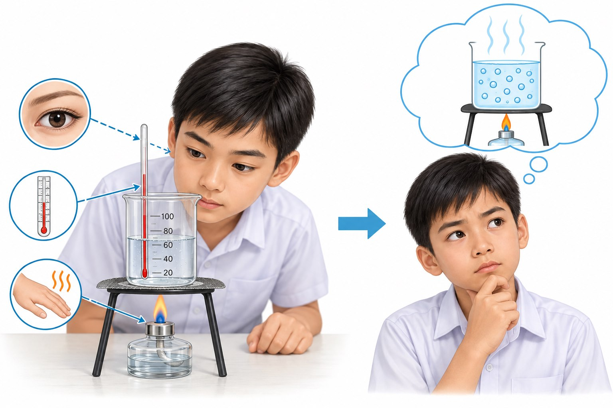
การสังเกตและการลงความเห็น
G1U1L1S3
การสังเกตคือข้อมูลที่ได้รับโดยตรงจากประสาทสัมผัสหรือเครื่องมือ ส่วนการลงความเห็นเป็นการตีความข้อมูลนั้น ต้องแยกสองอย่างออกจากกัน
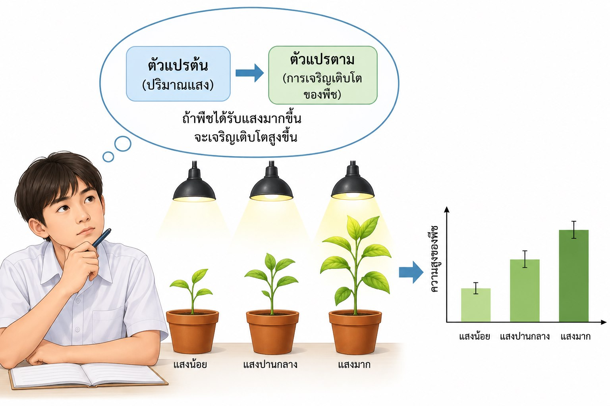
สมมติฐาน
G1U1L1S4
สมมติฐานเป็นคำอธิบายหรือคำคาดคะเนที่สามารถทดสอบได้ มักเชื่อมตัวแปรต้นกับตัวแปรตามและควรมีเหตุผลรองรับ
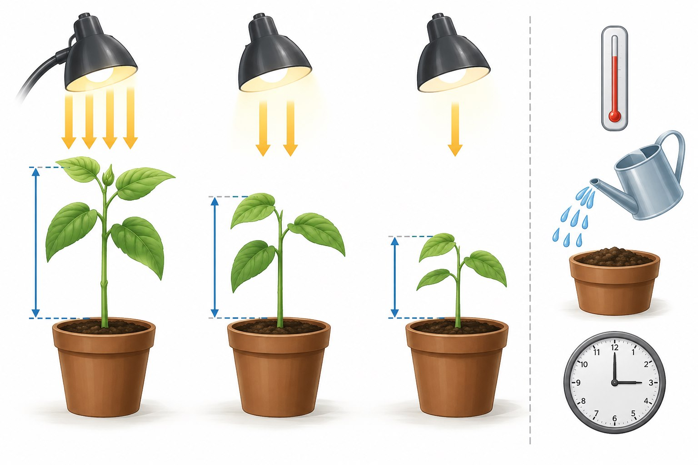
ตัวแปรในการทดลอง
G1U1L1S5
ตัวแปรต้นคือสิ่งที่ผู้ทดลองเปลี่ยน ตัวแปรตามคือผลที่วัด และตัวแปรควบคุมคือสิ่งที่ทำให้เหมือนกันเพื่อให้เปรียบเทียบได้อย่างยุติธรรม
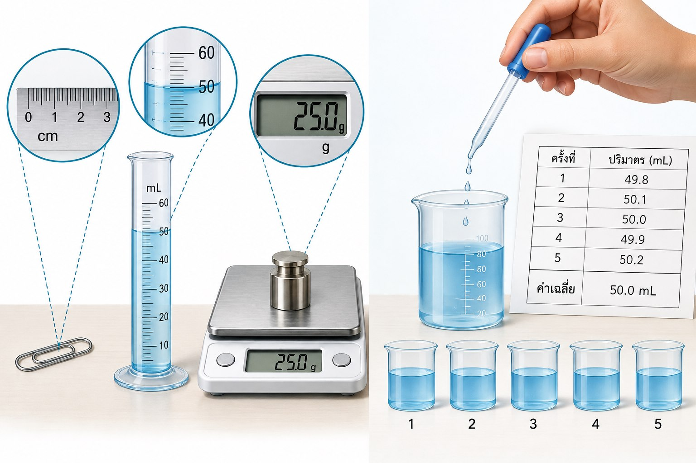
การวัดและการทำซ้ำ
G1U1L1S6
การวัดควรใช้หน่วยและเครื่องมือเหมาะสม การทำซ้ำช่วยเห็นความแปรปรวน ลดผลจากความผิดพลาดแบบสุ่ม และทำให้ข้อสรุปน่าเชื่อถือขึ้น
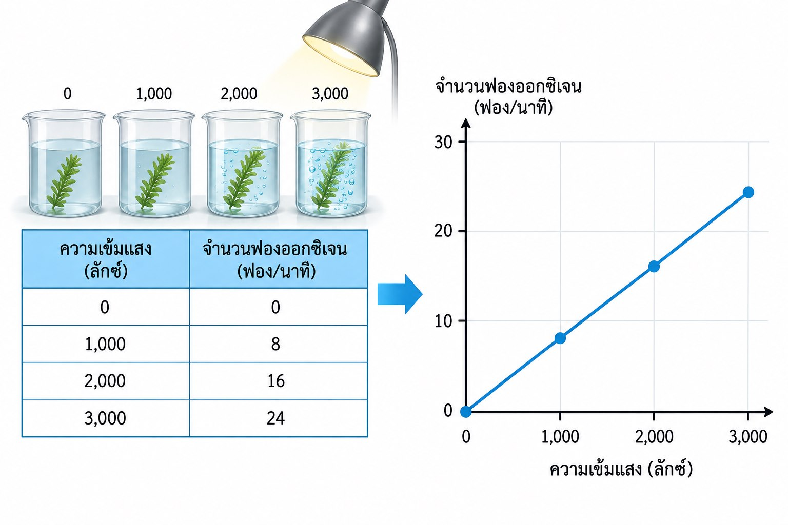
การจัดข้อมูลและกราฟ
G1U1L1S7
ตารางช่วยจัดข้อมูลอย่างเป็นระบบ ส่วนกราฟช่วยมองแนวโน้ม ความสัมพันธ์ หรือความแตกต่าง ต้องเลือกแกนและหน่วยให้ถูก
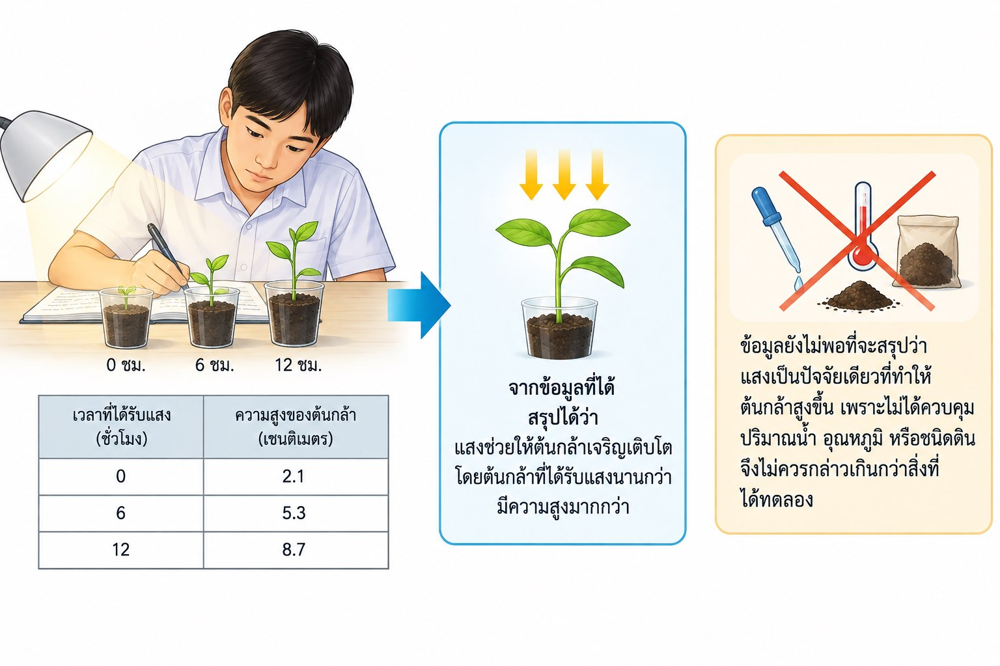
การสรุปจากหลักฐาน
G1U1L1S8
ข้อสรุปต้องตอบคำถามเดิมและอ้างอิงข้อมูลจริง หากข้อมูลไม่พอควรระบุข้อจำกัด ไม่ควรกล่าวเกินสิ่งที่ทดลองได้
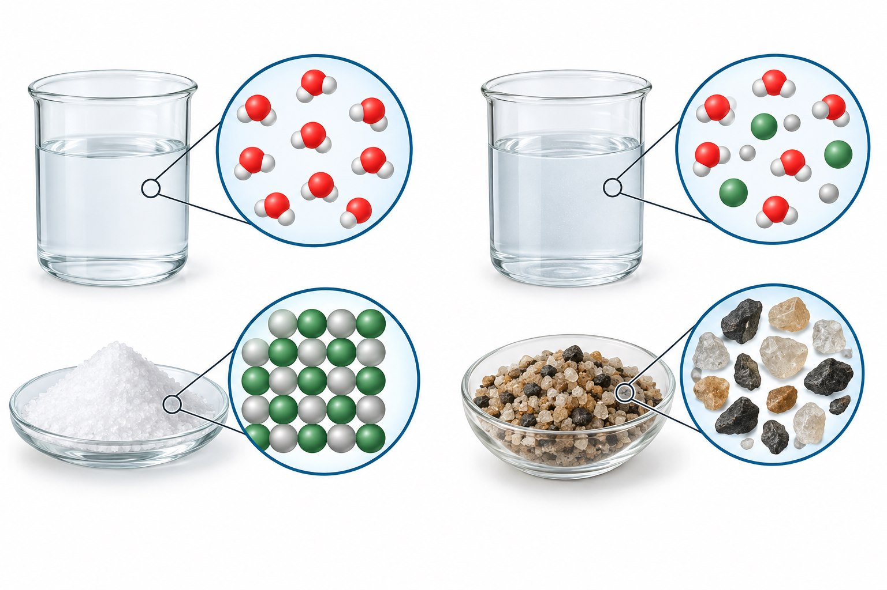
สารบริสุทธิ์และสารผสม
G1U2L1S1
สารบริสุทธิ์มีองค์ประกอบคงที่และสมบัติเฉพาะค่อนข้างแน่นอน ส่วนสารผสมประกอบด้วยสารมากกว่าหนึ่งชนิดและสัดส่วนเปลี่ยนได้
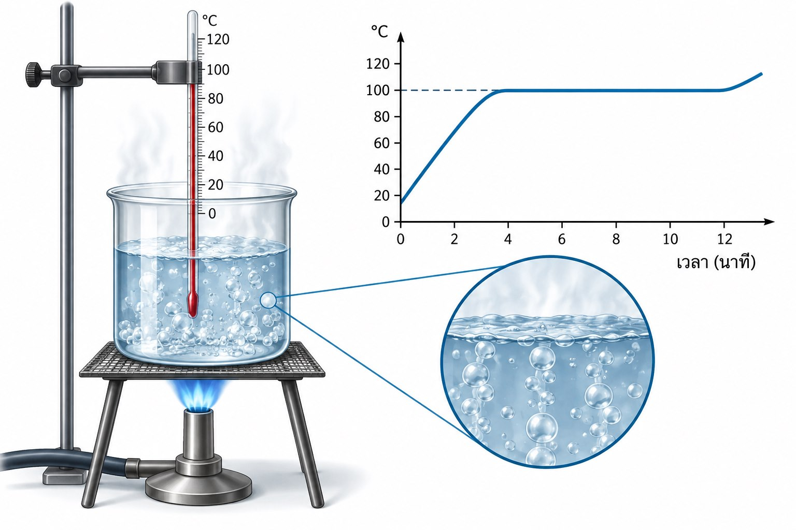
จุดเดือด
G1U2L1S2
จุดเดือดคืออุณหภูมิที่ของเหลวเดือดภายใต้ความดันที่กำหนด สารบริสุทธิ์ชนิดหนึ่งมีจุดเดือดจำเพาะและขณะเดือดอุณหภูมิค่อนข้างคงที่
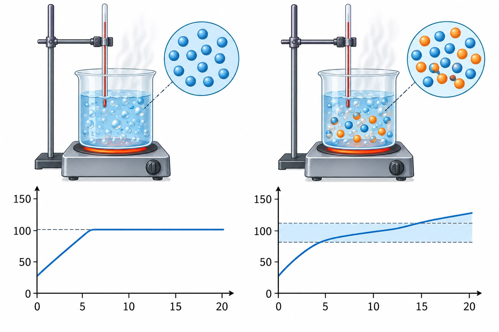
สารผสมขณะเดือด
G1U2L1S3
สารผสมมักมีองค์ประกอบเปลี่ยนระหว่างเดือด ทำให้อุณหภูมิเดือดเปลี่ยนเป็นช่วง การอ่านกราฟอุณหภูมิ-เวลาช่วยเปรียบเทียบสารได้
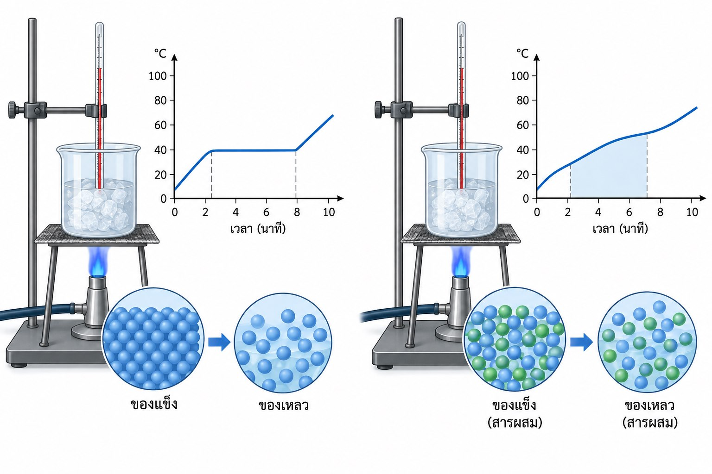
จุดหลอมเหลว
G1U2L1S4
สารบริสุทธิ์มีจุดหลอมเหลวค่อนข้างแน่นอน ส่วนสารผสมมักหลอมเหลวเป็นช่วง การวัดต้องให้ความร้อนและอ่านอุณหภูมิอย่างสม่ำเสมอ
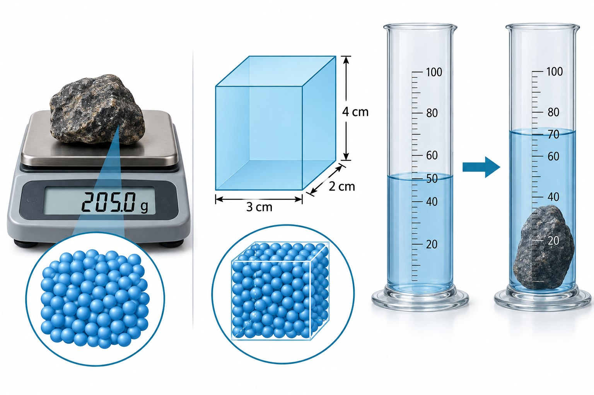
มวลและปริมาตร
G1U2L1S5
มวลบอกปริมาณสสาร ส่วนปริมาตรบอกพื้นที่สามมิติที่วัตถุครอบครอง ปริมาตรวัตถุรูปร่างไม่แน่นอนหาได้จากการแทนที่น้ำ
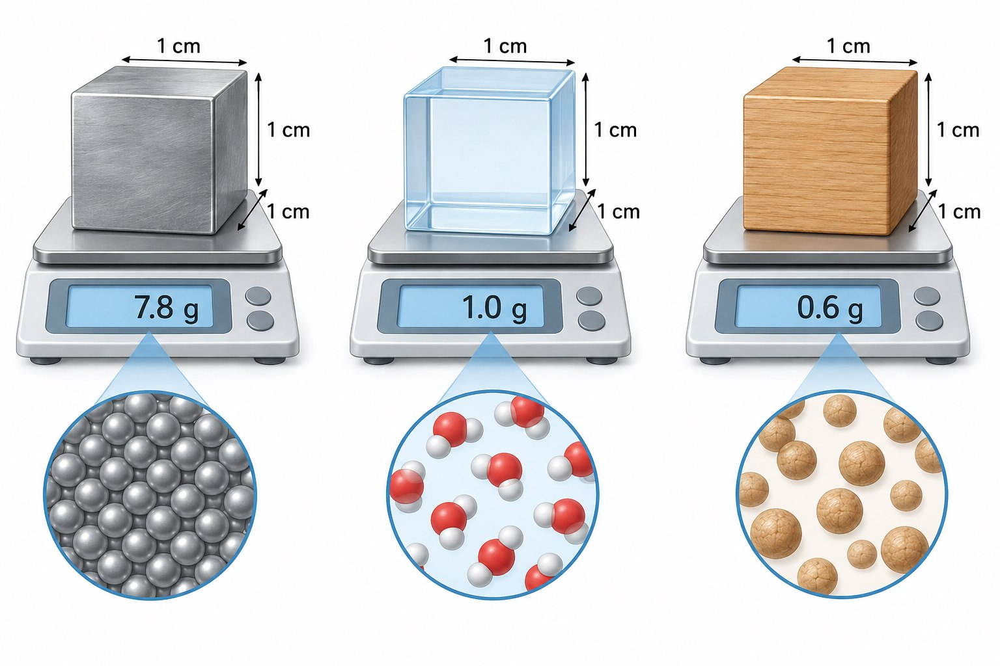
ความหนาแน่น
G1U2L1S6
ความหนาแน่นคือมวลต่อหนึ่งหน่วยปริมาตร ใช้เปรียบเทียบชนิดสารได้เมื่ออุณหภูมิและเงื่อนไขเหมาะสม
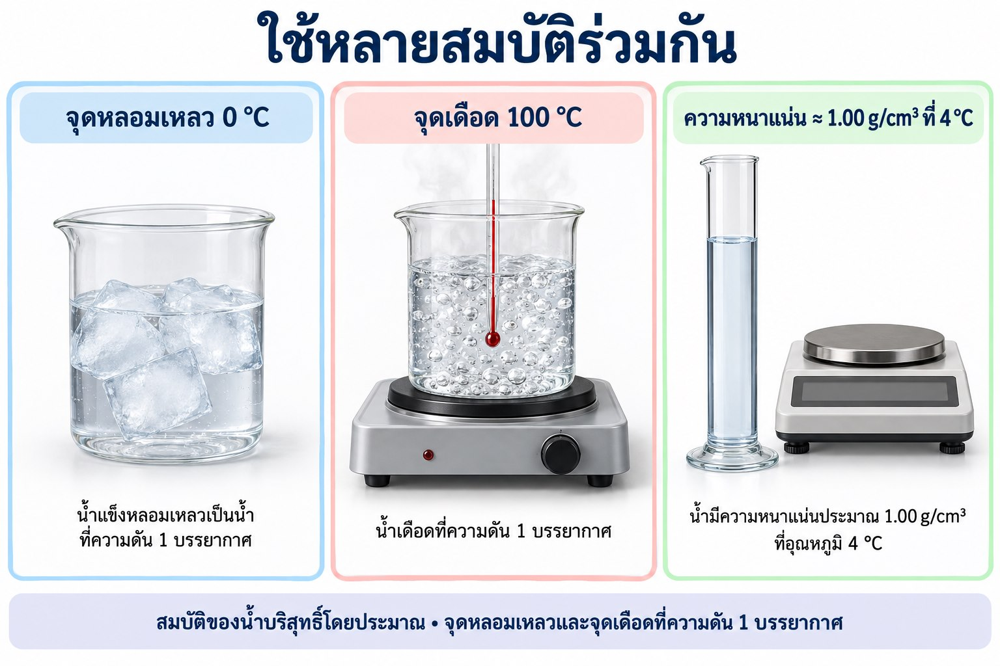
ใช้ข้อมูลจำแนกสาร
G1U2L1S7
การจำแนกสารควรใช้ข้อมูลหลายสมบัติร่วมกัน เช่น จุดเดือด จุดหลอมเหลว และความหนาแน่น พร้อมพิจารณาความคลาดเคลื่อนของการวัด
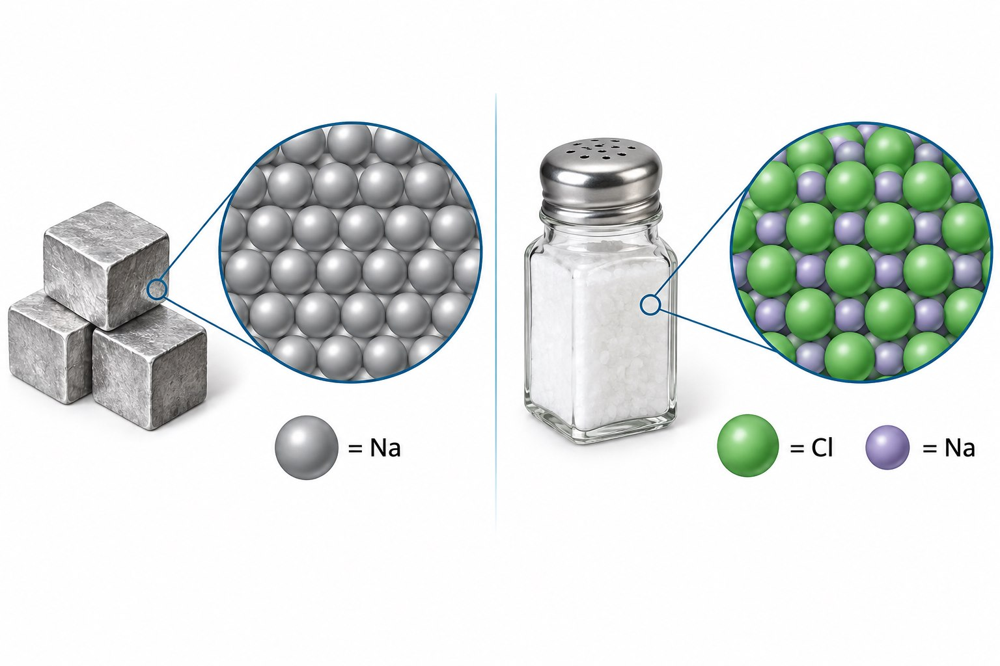
ธาตุและสารประกอบ
G1U2L2S1
ธาตุเป็นสารบริสุทธิ์ที่ประกอบด้วยอะตอมชนิดเดียว ส่วนสารประกอบประกอบด้วยอะตอมของธาตุตั้งแต่สองชนิดขึ้นไปรวมกันทางเคมีในอัตราส่วนคงที่
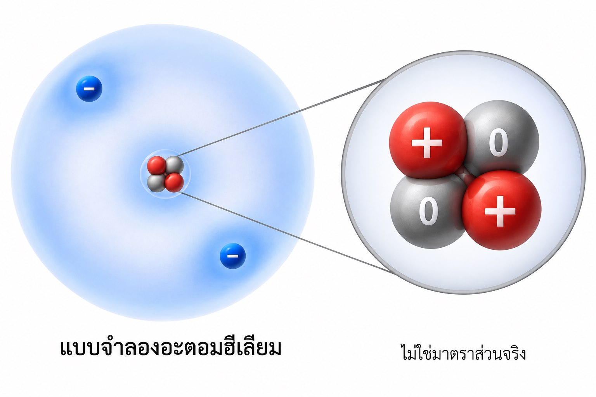
อะตอม
G1U2L2S2
อะตอมเป็นหน่วยพื้นฐานของธาตุ มีนิวเคลียสอยู่กลางและอิเล็กตรอนอยู่บริเวณรอบนิวเคลียส แบบจำลองอะตอมใช้ช่วยอธิบายสิ่งที่มองไม่เห็นโดยตรง
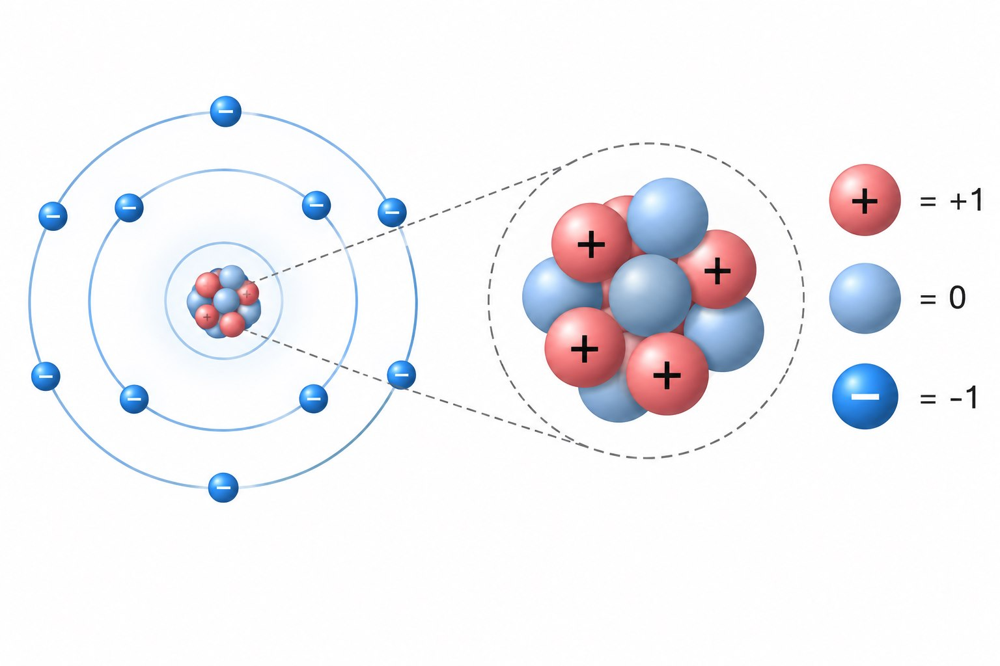
โปรตอน นิวตรอน อิเล็กตรอน
G1U2L2S3
โปรตอนมีประจุบวก นิวตรอนไม่มีประจุ และอิเล็กตรอนมีประจุลบ โปรตอนกับนิวตรอนอยู่ในนิวเคลียส อิเล็กตรอนอยู่รอบนิวเคลียส
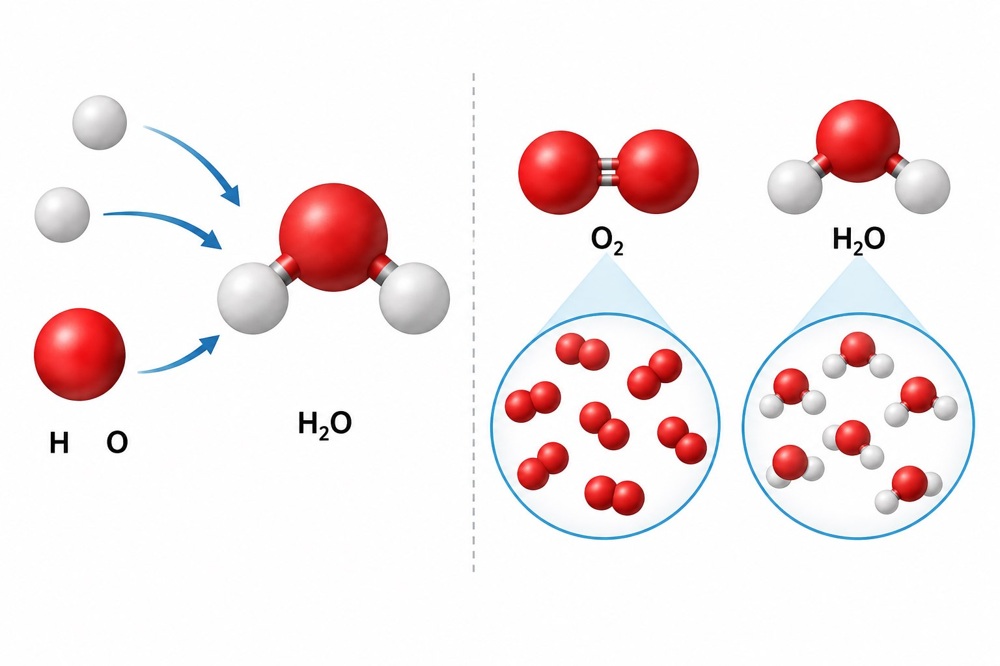
โมเลกุลและการรวมตัว
G1U2L2S4
อะตอมสามารถรวมกันเป็นโมเลกุลหรือโครงสร้างของสาร สารประกอบมีองค์ประกอบคงที่จึงมีสมบัติเฉพาะต่างจากธาตุเดิม
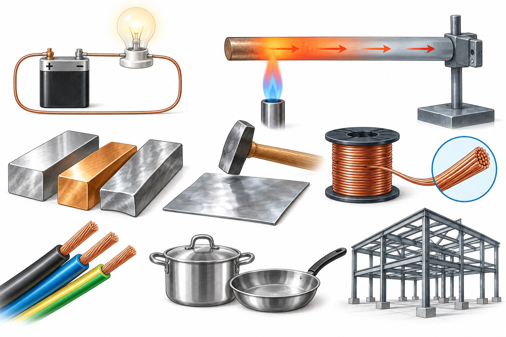
โลหะ
G1U2L2S5
โลหะส่วนใหญ่นำไฟฟ้าและความร้อนได้ดี มีผิวมันวาว ตีแผ่หรือดึงเป็นเส้นได้หลายชนิด จึงใช้ทำสายไฟ ภาชนะ และโครงสร้าง
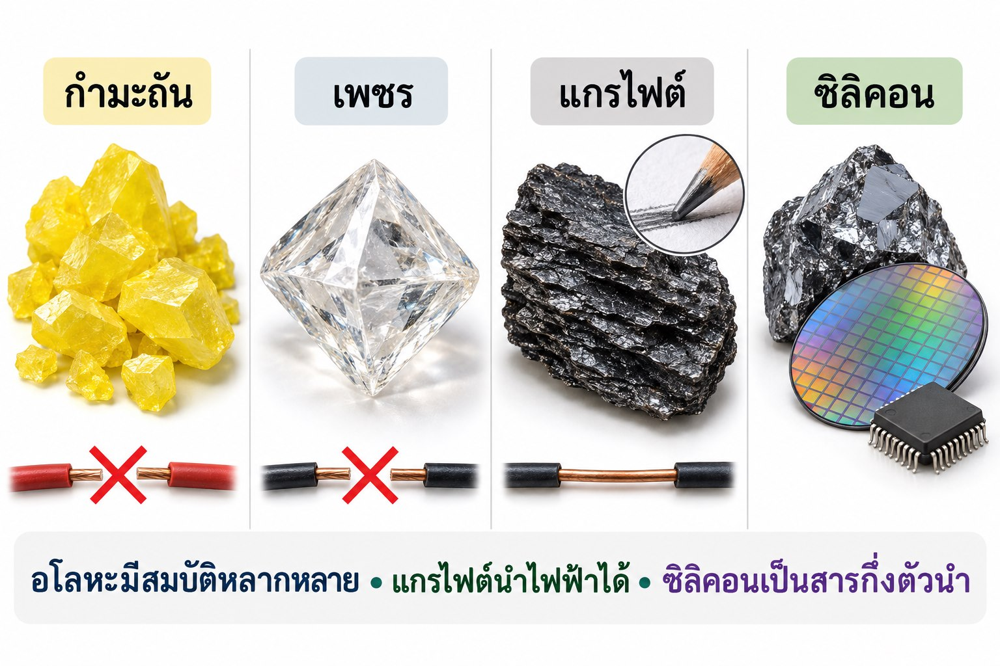
อโลหะและกึ่งโลหะ
G1U2L2S6
อโลหะมีสมบัติหลากหลายและโดยทั่วไปนำไฟฟ้าไม่ดี ส่วนกึ่งโลหะมีสมบัติบางอย่างก้ำกึ่งและบางชนิดเป็นสารกึ่งตัวนำ
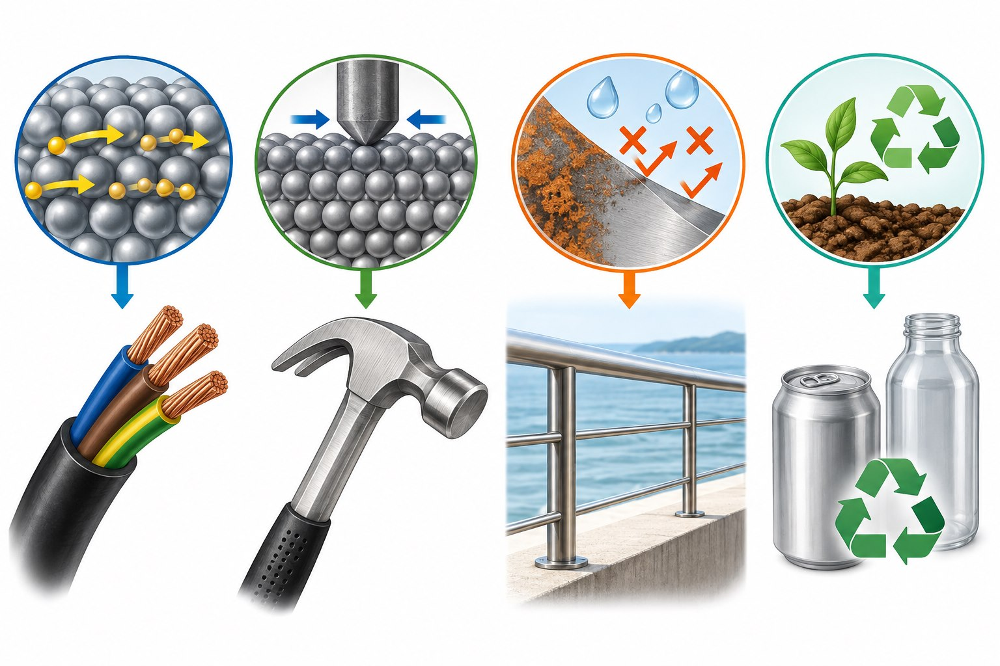
เลือกใช้ธาตุจากสมบัติ
G1U2L2S7
การเลือกวัสดุหรือธาตุต้องเชื่อมสมบัติกับงาน เช่น การนำไฟฟ้า ความแข็ง ความทนต่อการกัดกร่อน และผลกระทบต่อสิ่งแวดล้อม
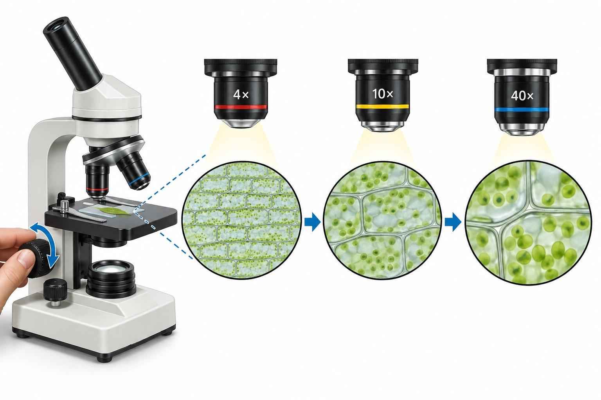
กล้องจุลทรรศน์
G1U3L1S1
กล้องจุลทรรศน์ใช้เลนส์ขยายวัตถุขนาดเล็ก ควรเริ่มจากเลนส์ใกล้วัตถุกำลังต่ำ ปรับภาพให้ชัดแล้วจึงเพิ่มกำลังขยาย
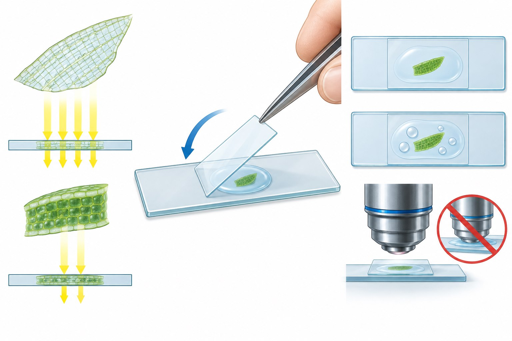
การเตรียมและสังเกตสไลด์
G1U3L1S2
ตัวอย่างควรบางและมีแสงผ่านได้พอเหมาะ วางแผ่นปิดสไลด์อย่างระมัดระวังเพื่อลดฟองอากาศและป้องกันเลนส์
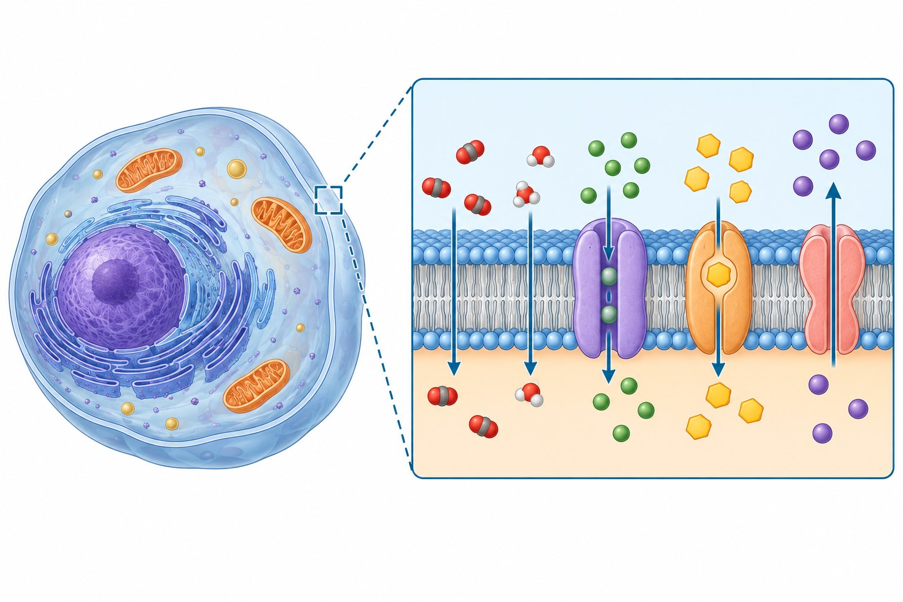
เยื่อหุ้มเซลล์
G1U3L1S3
เยื่อหุ้มเซลล์ห่อหุ้มเซลล์และควบคุมการผ่านเข้าออกของสารบางชนิด ช่วยรักษาสภาพภายในเซลล์
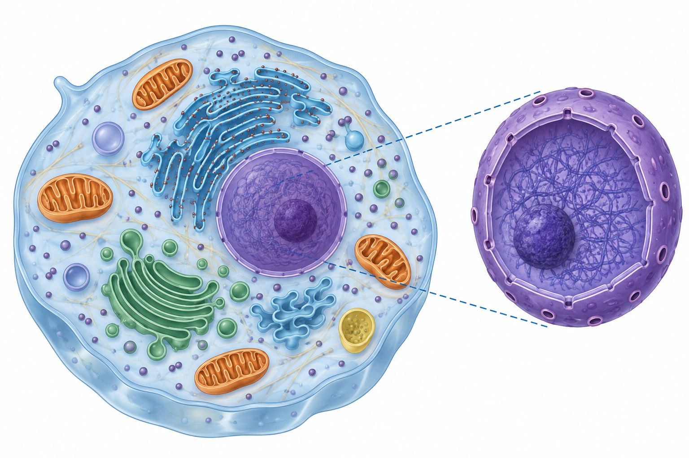
ไซโทพลาซึมและนิวเคลียส
G1U3L1S4
ไซโทพลาซึมเป็นบริเวณที่มีโครงสร้างและปฏิกิริยาหลายอย่างเกิดขึ้น นิวเคลียสมีสารพันธุกรรมและเกี่ยวข้องกับการควบคุมการทำงานของเซลล์
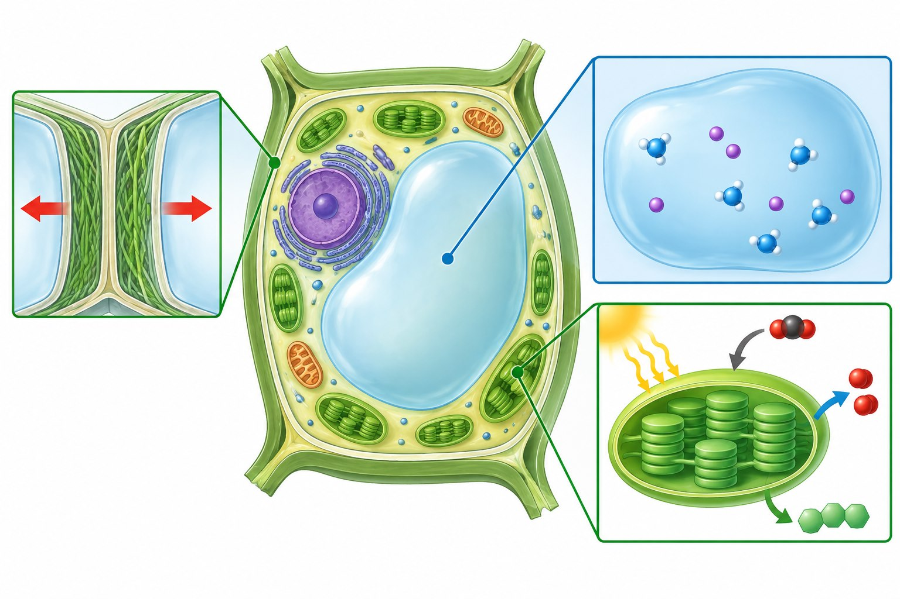
ผนังเซลล์ แวคิวโอล คลอโรพลาสต์
G1U3L1S5
เซลล์พืชมีผนังเซลล์ช่วยค้ำจุน แวคิวโอลเก็บสารและช่วยรักษาความเต่ง และคลอโรพลาสต์เกี่ยวข้องกับการสังเคราะห์ด้วยแสง
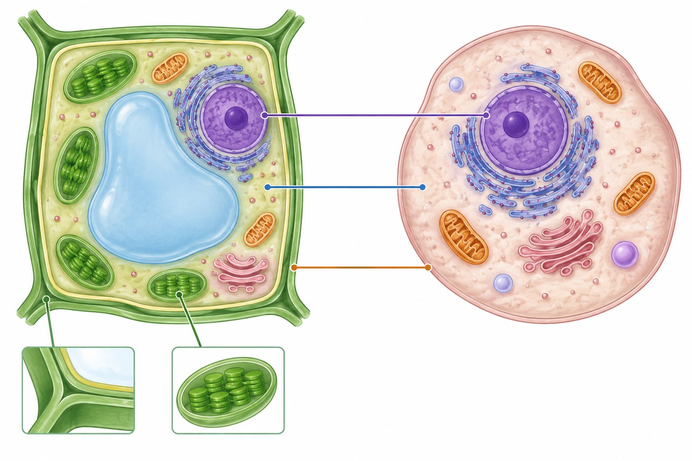
เปรียบเทียบเซลล์พืชและสัตว์
G1U3L1S6
ทั้งสองมีเยื่อหุ้มเซลล์ ไซโทพลาซึม และนิวเคลียสเป็นองค์ประกอบสำคัญ แต่เซลล์พืชมีผนังเซลล์และโครงสร้างเฉพาะบางอย่าง
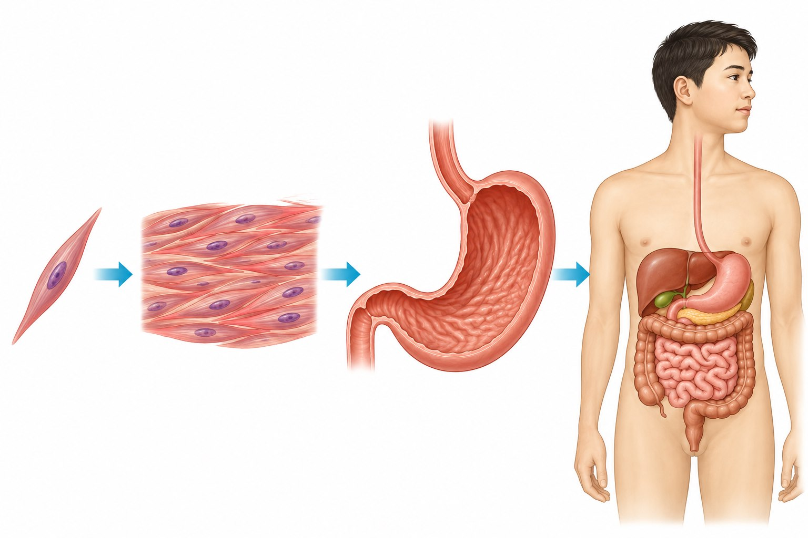
จากเซลล์สู่สิ่งมีชีวิต
G1U3L1S7
เซลล์ที่ทำหน้าที่คล้ายกันรวมเป็นเนื้อเยื่อ เนื้อเยื่อรวมเป็นอวัยวะ อวัยวะหลายชนิดทำงานร่วมเป็นระบบอวัยวะ
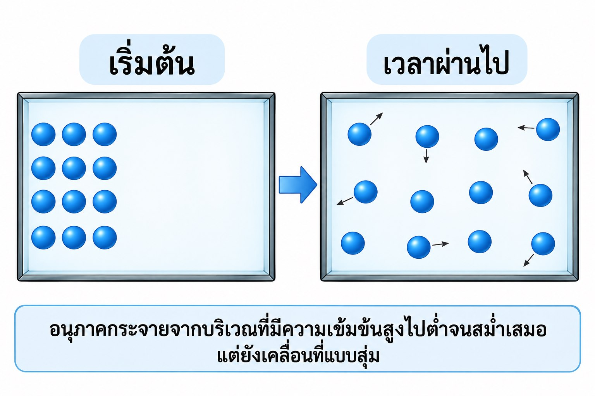
การแพร่คืออะไร
G1U3L2S1
การแพร่เกิดจากการเคลื่อนที่แบบสุ่มของอนุภาค ทำให้เกิดการเคลื่อนที่สุทธิจากบริเวณที่มีความเข้มข้นสูงไปต่ำจนกระจายสม่ำเสมอมากขึ้น
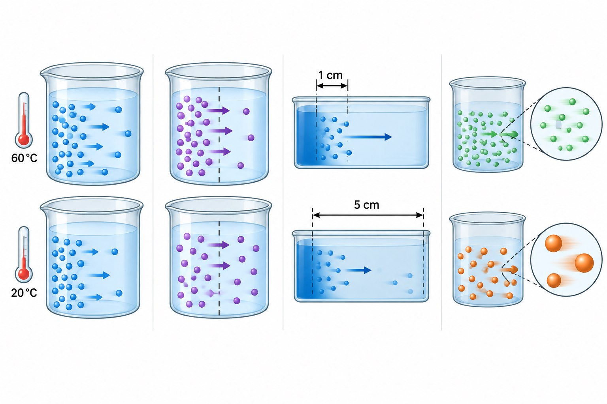
ปัจจัยที่มีผลต่อการแพร่
G1U3L2S2
อุณหภูมิ ความแตกต่างของความเข้มข้น ระยะทาง และขนาดอนุภาคมีผลต่ออัตราการแพร่ในหลายระบบ
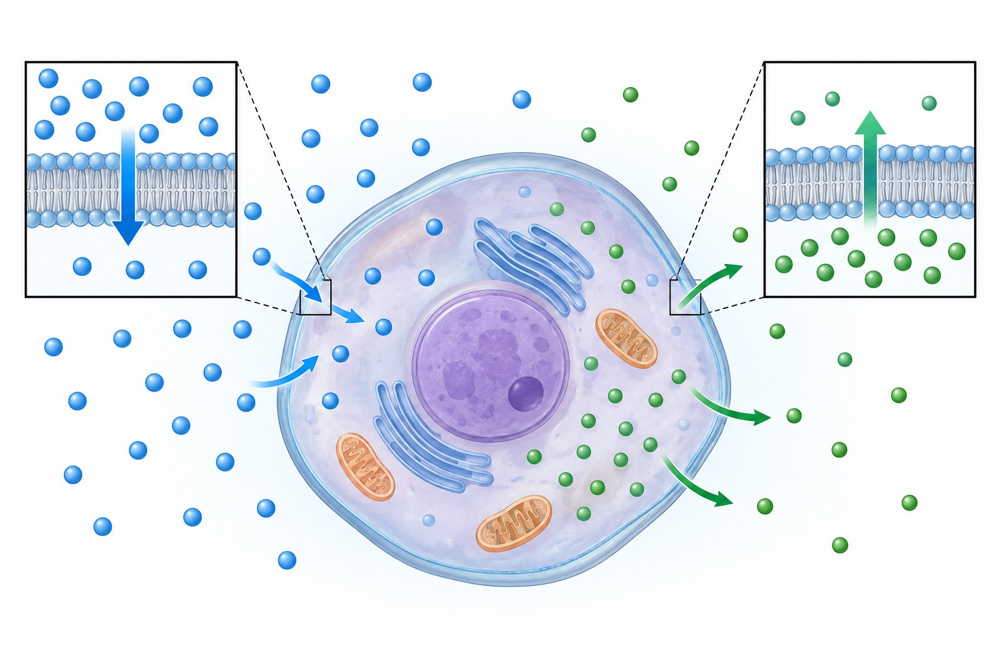
การแพร่กับเซลล์
G1U3L2S3
แก๊สและสารขนาดเล็กบางชนิดแลกเปลี่ยนระหว่างเซลล์กับสิ่งแวดล้อมด้วยการแพร่เมื่อมีความแตกต่างของความเข้มข้น
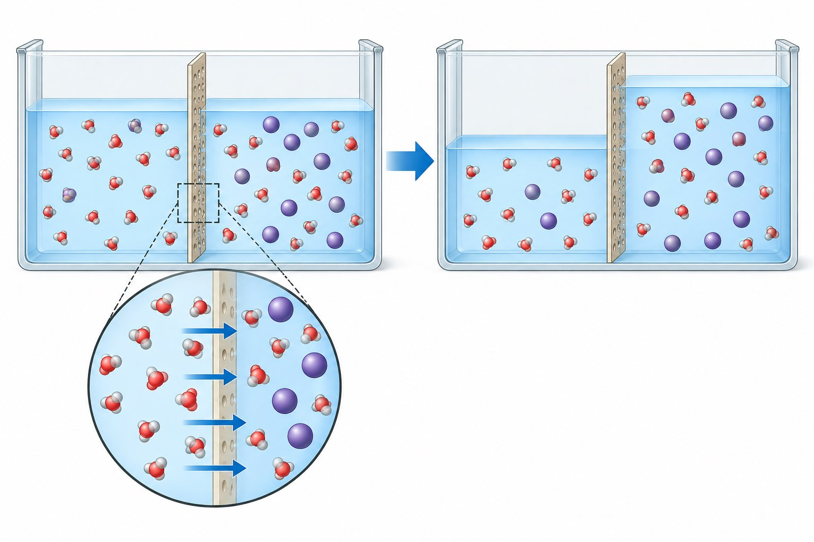
ออสโมซิส
G1U3L2S4
ออสโมซิสเป็นการเคลื่อนที่สุทธิของน้ำผ่านเยื่อเลือกผ่านจากบริเวณที่มีน้ำมากกว่าไปบริเวณที่มีน้ำน้อยกว่าเมื่อเปรียบเทียบสารละลาย
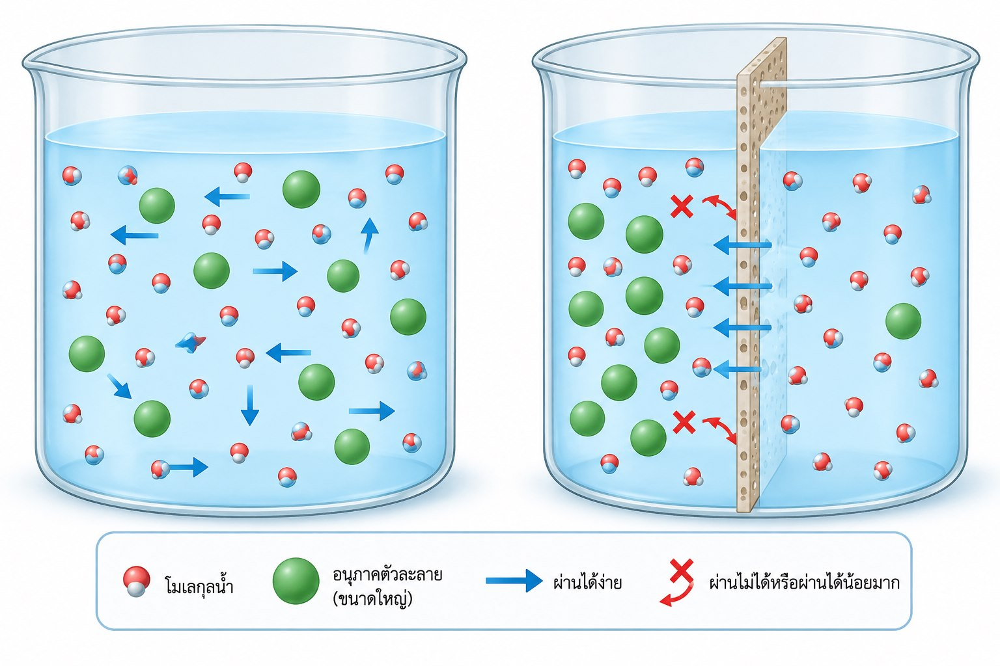
เยื่อเลือกผ่าน
G1U3L2S5
เยื่อเลือกผ่านยอมให้สารบางชนิดผ่านได้ง่ายกว่าสารอื่น จึงทำให้การกระจายของน้ำและตัวละลายไม่เหมือนระบบที่ไม่มีเยื่อ
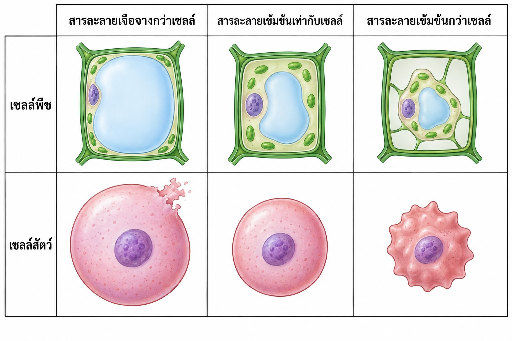
ผลต่อเซลล์พืชและสัตว์
G1U3L2S6
เซลล์พืชมีผนังเซลล์จึงทนต่อการรับน้ำได้มากกว่าเซลล์สัตว์ เซลล์สัตว์ในสารละลายที่เจือจางมากอาจบวมและเสียหาย
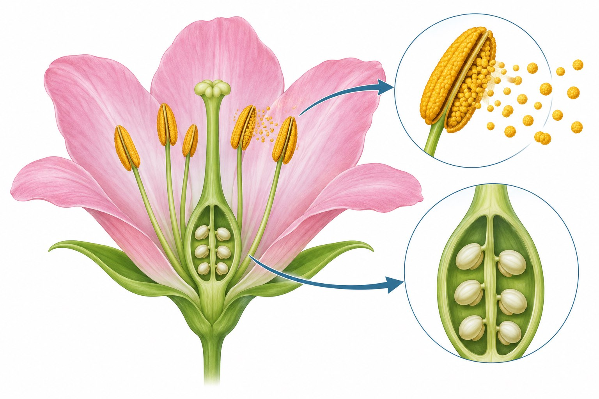
ส่วนประกอบของดอก
G1U4L1S1
กลีบเลี้ยง กลีบดอก เกสรเพศผู้ และเกสรเพศเมียมีบทบาทต่างกัน เกสรเพศผู้สร้างละอองเรณู ส่วนรังไข่มีออวุล
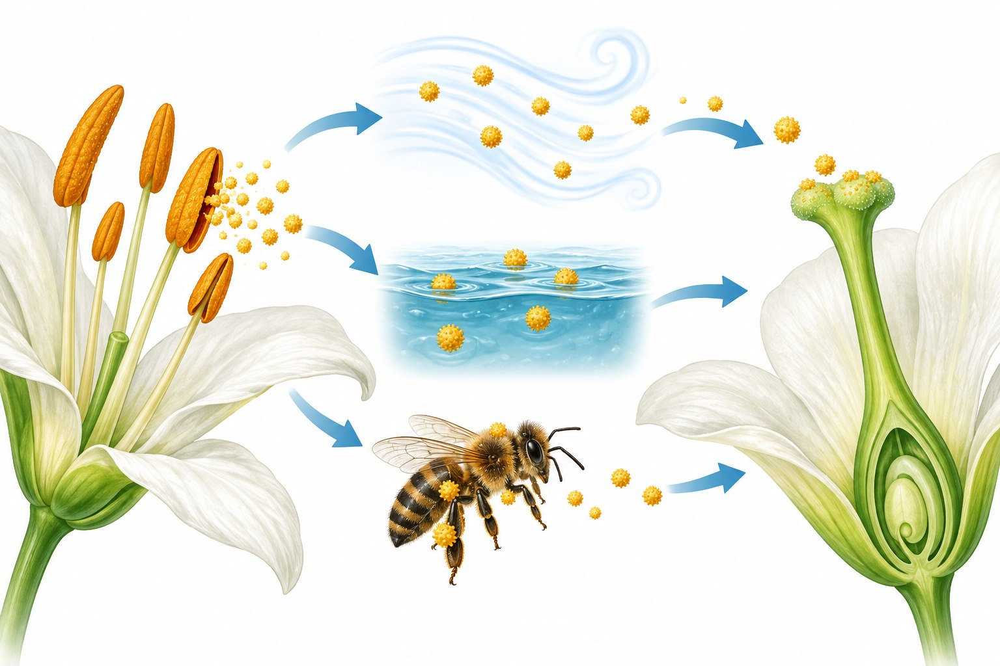
การถ่ายเรณู
G1U4L1S2
การถ่ายเรณูคือการเคลื่อนละอองเรณูจากอับเรณูไปยังยอดเกสรเพศเมีย อาศัยลม น้ำ หรือสัตว์ช่วยได้
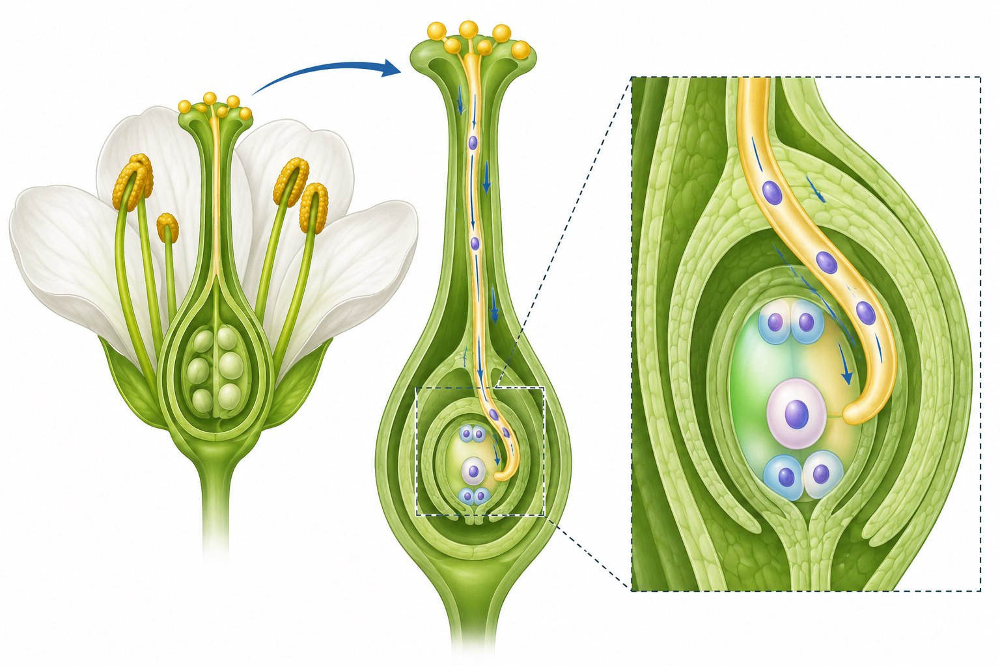
การปฏิสนธิ
G1U4L1S3
หลังละอองเรณูงอก หลอดเรณูนำเซลล์สืบพันธุ์เพศผู้ไปยังออวุลเพื่อเกิดการปฏิสนธิ
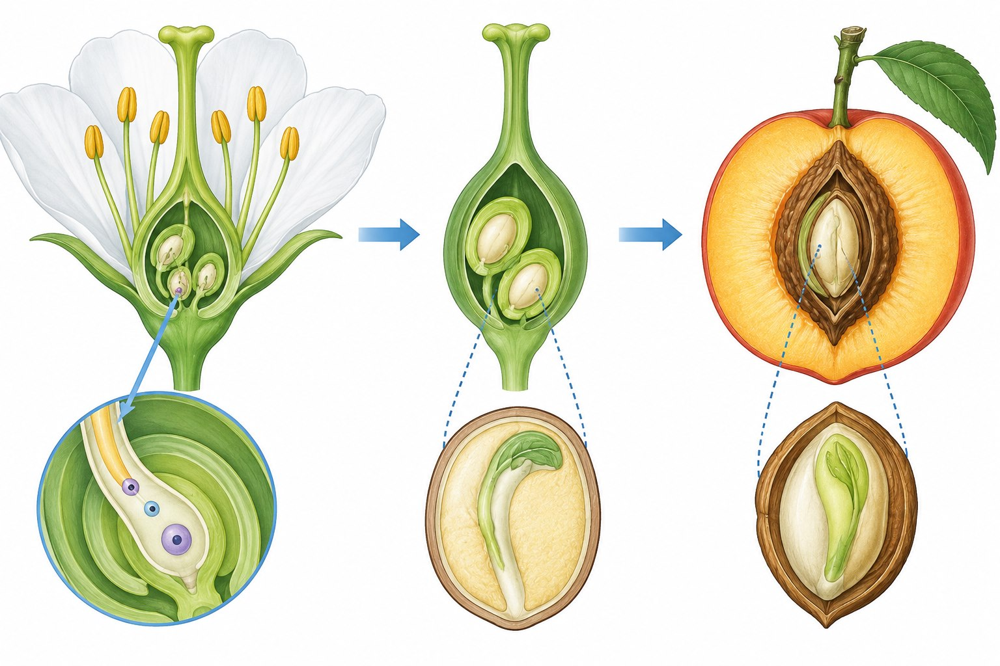
การเกิดเมล็ดและผล
G1U4L1S4
หลังปฏิสนธิ ออวุลพัฒนาเป็นเมล็ด ส่วนรังไข่มักพัฒนาเป็นผล เมล็ดมีเอ็มบริโอและอาหารสะสมตามชนิด
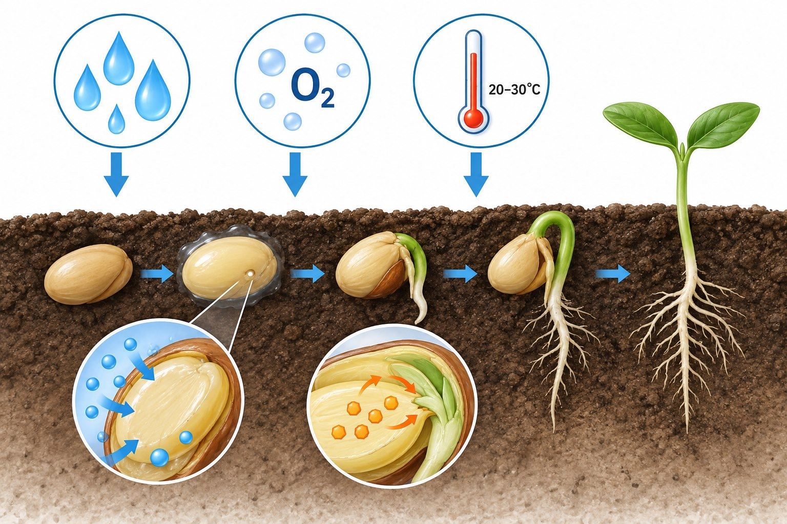
การงอกของเมล็ด
G1U4L1S5
การงอกส่วนใหญ่ต้องใช้น้ำ ออกซิเจน และอุณหภูมิที่เหมาะสม น้ำกระตุ้นกระบวนการเมแทบอลิซึมและเอ็มบริโอใช้พลังงานสะสม
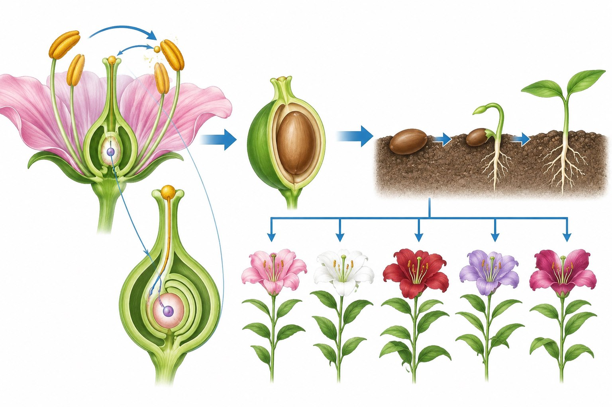
ขยายพันธุ์โดยอาศัยเพศ
G1U4L1S6
การใช้เมล็ดเกิดจากการสืบพันธุ์แบบอาศัยเพศ ทำให้ลูกมีความหลากหลายทางพันธุกรรมมากขึ้น
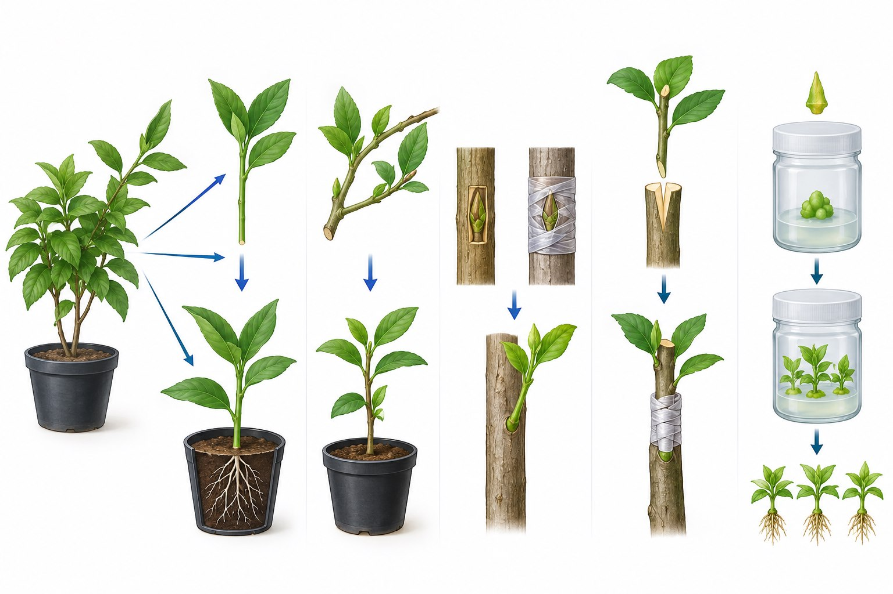
ขยายพันธุ์ไม่อาศัยเพศ
G1U4L1S7
ปักชำ ตอนกิ่ง ติดตา เสียบยอด และเพาะเลี้ยงเนื้อเยื่อใช้ส่วนของพืชและมักรักษาลักษณะพันธุกรรมของต้นแม่
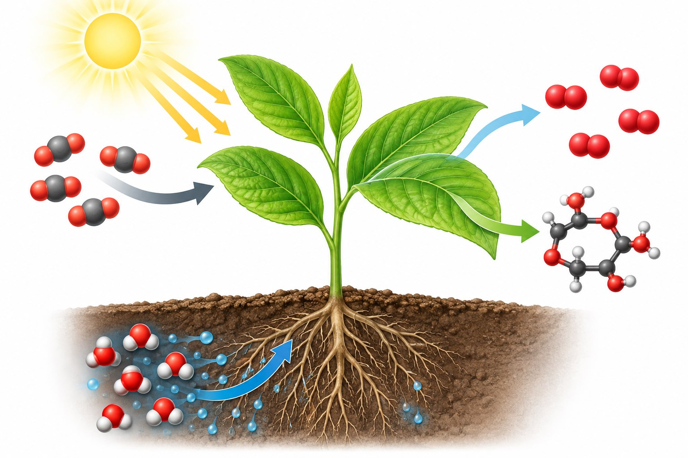
ความหมายของการสังเคราะห์ด้วยแสง
G1U4L2S1
พืชสีเขียวใช้พลังงานแสงเปลี่ยนน้ำและคาร์บอนไดออกไซด์ให้เป็นน้ำตาล และมีออกซิเจนเป็นผลผลิตสำคัญ
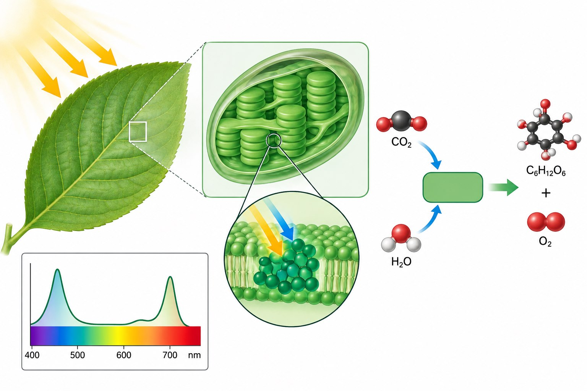
บทบาทของคลอโรฟิลล์
G1U4L2S2
คลอโรฟิลล์ในคลอโรพลาสต์ดูดกลืนพลังงานแสงบางช่วงและช่วยให้กระบวนการสังเคราะห์ด้วยแสงเกิดขึ้น
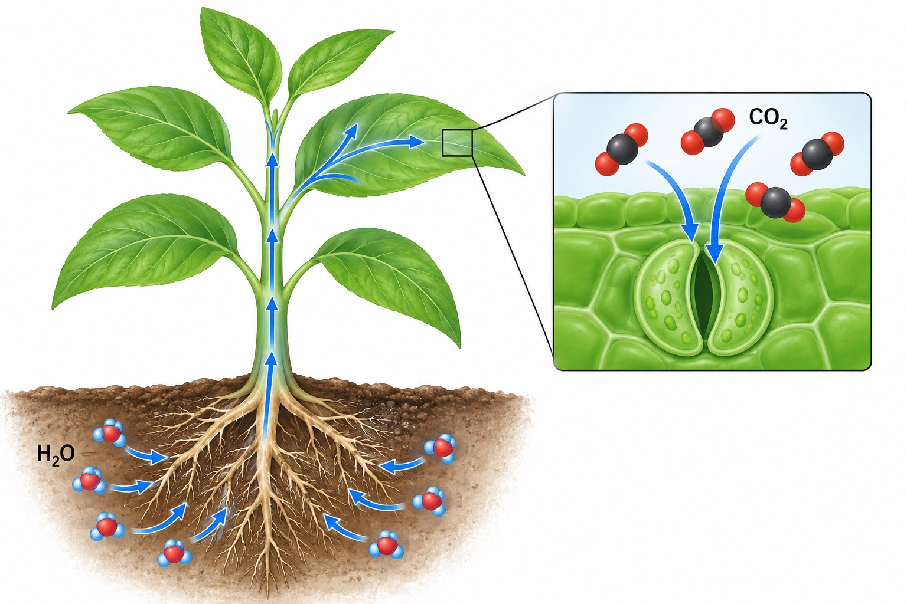
น้ำและคาร์บอนไดออกไซด์
G1U4L2S3
น้ำเข้าสู่พืชทางรากและลำเลียงสู่ใบ ส่วนคาร์บอนไดออกไซด์เข้าสู่ใบผ่านปากใบ ทั้งสองเป็นสารตั้งต้นสำคัญ
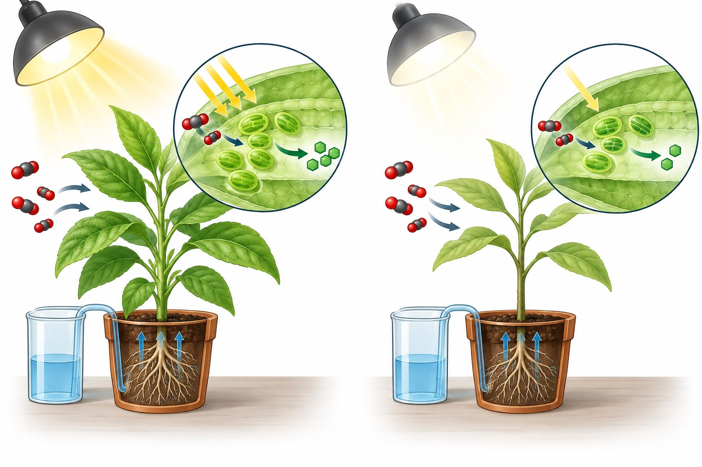
แสงเป็นแหล่งพลังงาน
G1U4L2S4
เมื่อแสงไม่เพียงพอ อัตราการสังเคราะห์ด้วยแสงลดลง แม้มีน้ำและคาร์บอนไดออกไซด์เพียงพอ
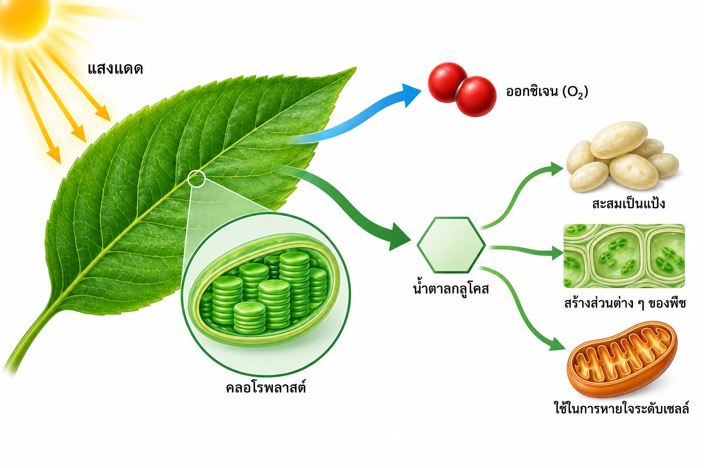
ผลผลิตของกระบวนการ
G1U4L2S5
น้ำตาลที่สร้างอาจถูกใช้หายใจ สร้างสารอื่น หรือลำเลียง/สะสม ส่วนออกซิเจนจำนวนหนึ่งออกสู่บรรยากาศ
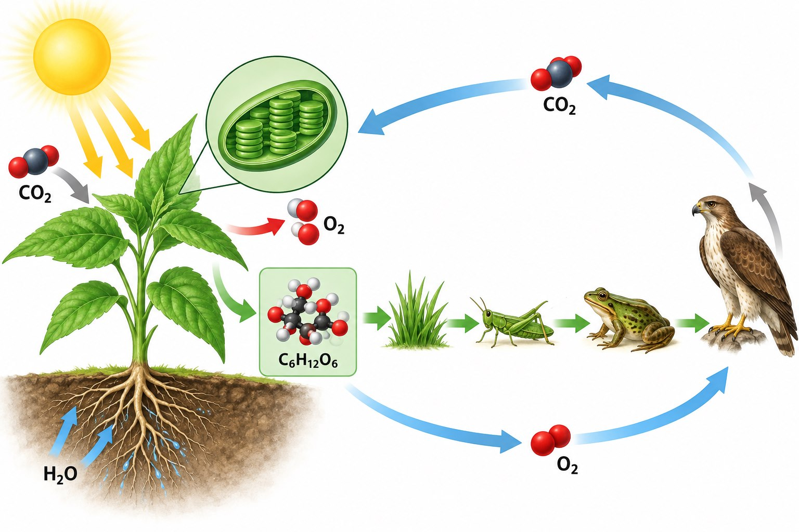
ความสำคัญต่อระบบนิเวศ
G1U4L2S6
การสังเคราะห์ด้วยแสงเป็นทางเข้าพลังงานสำคัญของระบบนิเวศ สร้างสารอินทรีย์ให้ห่วงโซ่อาหารและช่วยรักษาสมดุล CO₂/O₂
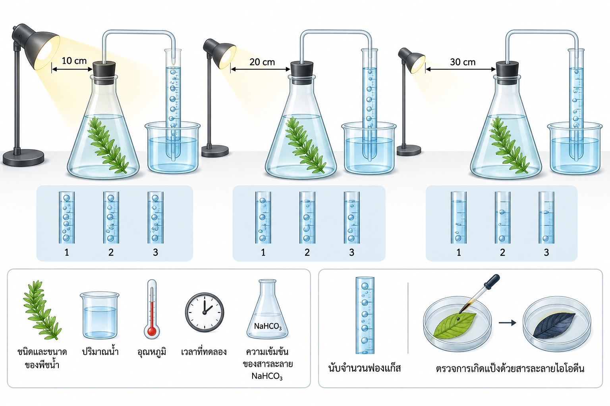
ออกแบบการทดลอง
G1U4L2S7
หากทดสอบปัจจัยหนึ่งต้องควบคุมปัจจัยอื่นให้ใกล้เคียงกัน ใช้ชุดควบคุม ทำซ้ำ และกำหนดตัวชี้วัด เช่น จำนวนฟองแก๊สหรือการตรวจแป้ง
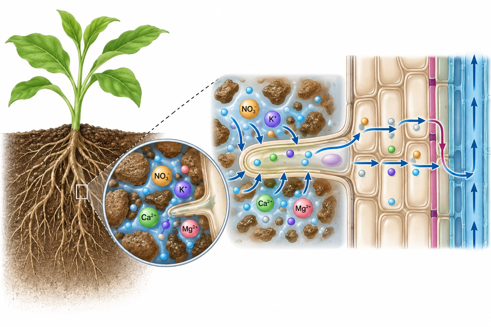
รากดูดน้ำและธาตุอาหาร
G1U4L3S1
ขนรากเพิ่มพื้นที่ผิวในการดูดน้ำและแร่ธาตุจากดิน น้ำเข้าสู่รากตามความต่างของศักย์น้ำและสารละลายเคลื่อนตามกลไกต่าง ๆ
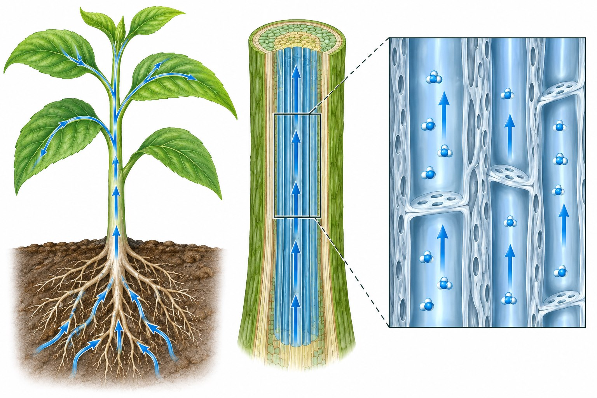
ไซเล็ม
G1U4L3S2
ไซเล็มเป็นเนื้อเยื่อลำเลียงน้ำและธาตุอาหารจากรากขึ้นสู่ลำต้นและใบ มีโครงสร้างท่อที่เหมาะต่อการลำเลียง
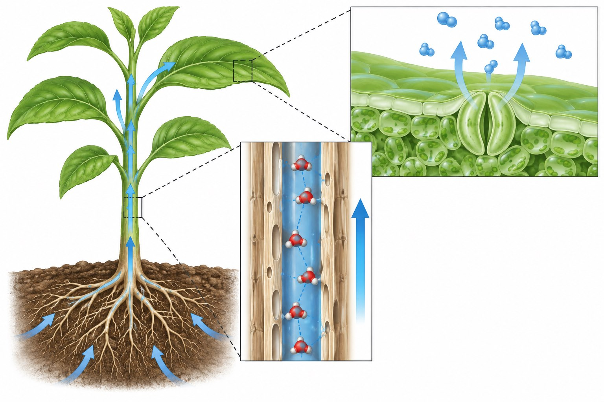
การคายน้ำ
G1U4L3S3
น้ำระเหยออกจากใบผ่านปากใบ ทำให้เกิดแรงดึงต่อเนื่องในคอลัมน์น้ำ ช่วยลำเลียงน้ำขึ้นด้านบน
โฟลเอ็ม
G1U4L3S4
โฟลเอ็มลำเลียงน้ำตาลและสารอินทรีย์จากบริเวณแหล่งสร้าง เช่น ใบ ไปยังแหล่งใช้หรือสะสม เช่น ราก ผล ยอด
ความสัมพันธ์ไซเล็ม–โฟลเอ็ม
G1U4L3S5
พืชต้องใช้ทั้งระบบน้ำ/แร่ธาตุและระบบอาหารร่วมกัน การสังเคราะห์ด้วยแสงที่ใบจึงเชื่อมกับการดูดน้ำจากรากและการลำเลียงอาหาร
อนุภาคในของแข็ง
G1U5L1S1
อนุภาคอยู่ใกล้กันและสั่นรอบตำแหน่งสมดุล ทำให้ของแข็งมีรูปร่างและปริมาตรค่อนข้างคงที่
อนุภาคในของเหลว
G1U5L1S2
อนุภาคอยู่ใกล้กันแต่เคลื่อนผ่านกันได้ ของเหลวจึงมีปริมาตรค่อนข้างคงที่แต่เปลี่ยนรูปร่างตามภาชนะ
อนุภาคในแก๊ส
G1U5L1S3
อนุภาคอยู่ห่างและเคลื่อนที่รวดเร็วหลายทิศ จึงขยายเต็มภาชนะและอัดตัวได้มากกว่าของแข็ง/ของเหลว
ความร้อนกับอุณหภูมิ
G1U5L1S4
อุณหภูมิสัมพันธ์กับพลังงานจลน์เฉลี่ยของอนุภาค ส่วนความร้อนคือพลังงานที่ถ่ายโอนเพราะอุณหภูมิต่างกัน
ปัจจัยต่อการเปลี่ยนอุณหภูมิ
G1U5L1S5
อุณหภูมิเปลี่ยนมากน้อยขึ้นกับปริมาณความร้อน มวล และชนิดสาร สารต่างชนิดรับพลังงานเท่ากันอาจมีอุณหภูมิเปลี่ยนไม่เท่ากัน
การขยายตัวและหดตัว
G1U5L1S6
เมื่อร้อน อนุภาคเคลื่อนที่มากขึ้นและระยะห่างเฉลี่ยเพิ่ม ทำให้สสารส่วนใหญ่ขยายตัว เมื่อเย็นลงมักหดตัว
การหลอมเหลวและแข็งตัว
G1U5L1S7
หลอมเหลวรับพลังงานเพื่อเปลี่ยนโครงสร้างจากของแข็งเป็นของเหลว ส่วนแข็งตัวคายพลังงาน
การกลายเป็นไอและควบแน่น
G1U5L1S8
การกลายเป็นไอเกิดที่ผิวได้ทุกอุณหภูมิ ส่วนการเดือดเกิดทั่วของเหลวเมื่อความดันไอเหมาะสม การควบแน่นเป็นกระบวนการย้อนกลับ
ทิศทางการถ่ายโอนความร้อน
G1U5L2S1
ความร้อนถ่ายจากบริเวณอุณหภูมิสูงไปต่ำจนไม่มีการถ่ายโอนสุทธิ
การนำความร้อน
G1U5L2S2
พลังงานถ่ายผ่านการสั่นและชนของอนุภาคโดยไม่มีการเคลื่อนย้ายมวลสารโดยรวม โลหะมักนำความร้อนได้ดี
ตัวนำและฉนวนความร้อน
G1U5L2S3
วัสดุนำความร้อนสูงเหมาะกับส่วนที่ต้องถ่ายพลังงาน ส่วนฉนวนช่วยลดอัตราการถ่ายโอน
การพาความร้อน
G1U5L2S4
ของไหลที่ร้อนมักมีความหนาแน่นลดลงและเคลื่อนที่ขึ้น ขณะที่ส่วนเย็นลงเคลื่อนแทนที่ เกิดกระแสพา
การแผ่รังสี
G1U5L2S5
พลังงานความร้อนถ่ายในรูปคลื่นแม่เหล็กไฟฟ้า ไม่ต้องอาศัยตัวกลาง
สมดุลความร้อน
G1U5L2S6
เมื่อวัตถุสองชิ้นแลกเปลี่ยนพลังงานจนมีอุณหภูมิเท่ากัน การถ่ายโอนสุทธิหยุด เรียกสมดุลความร้อน
การประยุกต์
G1U5L2S7
การเลือกวัสดุและการออกแบบบ้าน ภาชนะ หรือเสื้อผ้าต้องพิจารณาการนำ การพา และการแผ่รังสีร่วมกัน
องค์ประกอบบรรยากาศ
G1U6L1S1
บรรยากาศประกอบด้วยไนโตรเจน ออกซิเจน แก๊สอื่น ไอน้ำ และอนุภาคแขวนลอย สัดส่วนไอน้ำเปลี่ยนได้มากตามเวลาและพื้นที่
อุณหภูมิอากาศ
G1U6L1S2
พื้นผิวโลกดูดกลืนและคายพลังงาน ทำให้อากาศใกล้พื้นเปลี่ยนอุณหภูมิ ปัจจัยได้แก่ เวลา เมฆ ลักษณะพื้นผิว และตำแหน่ง
ความกดอากาศ
G1U6L1S3
อากาศมีมวลจึงสร้างความดัน ความกดอากาศลดลงเมื่อสูงขึ้นและเปลี่ยนตามสภาวะอากาศ
การเกิดลม
G1U6L1S4
ลมเกิดจากความแตกต่างของความกดอากาศ อากาศเคลื่อนจากบริเวณความกดสูงไปต่ำ ความร้อนที่ไม่เท่ากันช่วยสร้างความแตกต่างนี้
ความชื้น
G1U6L1S5
ความชื้นบอกปริมาณไอน้ำในอากาศ ความชื้นสัมพัทธ์ขึ้นกับทั้งปริมาณไอน้ำและอุณหภูมิ
การเกิดเมฆ
G1U6L1S6
อากาศชื้นยกตัวและเย็นลงจนไอน้ำควบแน่นบนอนุภาคเล็ก ๆ เป็นหยดน้ำหรือผลึกน้ำแข็ง
ฝนและหยาดน้ำฟ้า
G1U6L1S7
หยดน้ำหรือผลึกในเมฆต้องรวมตัวจนมีขนาดใหญ่พอจึงตกลงมาเป็นฝนหรือหยาดน้ำฟ้าแบบอื่น
เครื่องมืออากาศ
G1U6L1S8
เทอร์โมมิเตอร์วัดอุณหภูมิ บารอมิเตอร์วัดความกด เครื่องวัดความชื้นวัดความชื้น และเครื่องวัดลมช่วยเก็บข้อมูลอย่างเป็นระบบ
พยากรณ์อากาศ
G1U6L1S9
นักพยากรณ์ใช้ข้อมูลสถานี เรดาร์ ดาวเทียม และแบบจำลองร่วมกัน การพยากรณ์เป็นความน่าจะเป็นจึงมีความไม่แน่นอน
พายุฝนฟ้าคะนอง
G1U6L2S1
เกิดจากอากาศอุ่นชื้นยกตัวแรง เกิดเมฆคิวมูโลนิมบัส ฝนหนัก ลมกระโชก ฟ้าแลบฟ้าร้อง และบางครั้งลูกเห็บ
พายุหมุนเขตร้อน
G1U6L2S2
ก่อตัวเหนือทะเลอุ่นและมีโครงสร้างการหมุนขนาดใหญ่ อันตรายมาจากลมแรง ฝนหนัก คลื่นพายุซัดฝั่งและน้ำท่วม
การประเมินความเสี่ยง
G1U6L2S3
ความเสี่ยงขึ้นกับภัย ความเปราะบาง และการเปิดรับของพื้นที่ การเตรียมตัวต้องใช้ข้อมูลท้องถิ่นและประกาศเตือน
อากาศกับภูมิอากาศ
G1U6L2S4
อากาศคือสภาพระยะสั้น ส่วนภูมิอากาศคือแบบแผนระยะยาวหลายสิบปี การเปลี่ยนแปลงภูมิอากาศจึงดูจากแนวโน้ม ไม่ใช่วันใดวันหนึ่ง
ปรากฏการณ์เรือนกระจก
G1U6L2S5
ก๊าซเรือนกระจกดูดกลืนและแผ่รังสีอินฟราเรด ช่วยให้โลกอุ่นพอเหมาะ แต่การเพิ่มความเข้มข้นทำให้สมดุลพลังงานเปลี่ยนและโลกร้อนขึ้น
ผลกระทบและการปรับตัว
G1U6L2S6
อุณหภูมิสูงขึ้น ระดับทะเล การเปลี่ยนรูปแบบฝน และเหตุการณ์สุดขั้วส่งผลต่อระบบนิเวศ สุขภาพ และเศรษฐกิจ การลดการปล่อยและการปรับตัวต้องทำควบคู่
ธรรมชาติของความรู้วิทยาศาสตร์
G2U1L1S1
ความรู้วิทยาศาสตร์สร้างจากหลักฐานและการตีความอย่างมีเหตุผล จึงมีความน่าเชื่อถือแต่พร้อมปรับเมื่อมีหลักฐานใหม่
ข้อเท็จจริง กฎ ทฤษฎี และแบบจำลอง
G2U1L1S2
คำเหล่านี้มีบทบาทต่างกัน ทฤษฎีเป็นคำอธิบายกว้างที่มีหลักฐานมาก ไม่ได้เปลี่ยนเป็นกฎเมื่อพิสูจน์แล้ว ส่วนแบบจำลองใช้แทนระบบเพื่ออธิบายหรือพยากรณ์
หลักฐานและข้ออ้าง
G2U1L1S3
ข้ออ้างที่ดีต้องเชื่อมกับหลักฐานด้วยเหตุผลที่ชัดเจน ต้องพิจารณาคุณภาพ ปริมาณ และความเกี่ยวข้องของข้อมูล
แบบจำลองทางวิทยาศาสตร์
G2U1L1S4
แบบจำลองอาจเป็นภาพ สมการ วัตถุ หรือคอมพิวเตอร์ ช่วยเน้นส่วนสำคัญและมีข้อจำกัด
การสืบเสาะ
G2U1L1S5
เริ่มจากคำถาม เลือกวิธีเก็บข้อมูล วิเคราะห์ อธิบาย ตรวจสอบ และสื่อสาร กระบวนการอาจย้อนกลับและปรับเปลี่ยน ไม่จำเป็นต้องเป็นขั้นเส้นตรงตายตัว
การสื่อสารและการตรวจสอบ
G2U1L1S6
งานวิทยาศาสตร์ต้องเปิดเผยวิธี หลักฐาน และเหตุผลให้ผู้อื่นประเมินหรือทำซ้ำได้ การวิจารณ์เป็นส่วนหนึ่งของการพัฒนาความรู้
สารละลาย
G2U2L1S1
สารละลายเป็นสารผสมเนื้อเดียว ตัวทำละลายเป็นองค์ประกอบที่ทำหน้าที่ละลายสารอื่น ส่วนตัวละลายกระจายตัวสม่ำเสมอในระดับอนุภาค
ระบุตัวทำละลาย
G2U2L1S2
เมื่อองค์ประกอบมีสถานะต่างกัน มักพิจารณาสถานะของสารละลายเป็นหลัก เมื่อสถานะเหมือนกันมักพิจารณาปริมาณมากกว่าโดยทั่วไป
สารละลายอิ่มตัว
G2U2L1S3
ที่อุณหภูมิหนึ่ง ตัวทำละลายมีขีดจำกัดปริมาณตัวละลายที่ละลายได้ เมื่อถึงขีดจำกัดเรียกสารละลายอิ่มตัว
สภาพละลายได้
G2U2L1S4
สภาพละลายได้คือปริมาณสูงสุดของตัวละลายที่ละลายในตัวทำละลายปริมาณกำหนด ณ อุณหภูมิที่ระบุ ใช้กราฟสภาพละลายได้ช่วยเปรียบเทียบ
อุณหภูมิกับของแข็ง
G2U2L1S5
ของแข็งหลายชนิดละลายได้มากขึ้นเมื่ออุณหภูมิสูง แต่ไม่ใช่ทุกชนิด รูปร่างกราฟของแต่ละสารต่างกัน
อุณหภูมิกับแก๊ส
G2U2L1S6
แก๊สหลายชนิดละลายในของเหลวได้น้อยลงเมื่ออุณหภูมิสูงขึ้น จึงพบฟองแก๊สออกจากน้ำอุ่นได้ง่ายขึ้น
ความดันกับแก๊ส
G2U2L1S7
เมื่ออุณหภูมิคงที่ การเพิ่มความดันของแก๊สเหนือของเหลวโดยทั่วไปช่วยให้แก๊สละลายได้มากขึ้น
เลือกเงื่อนไขการละลาย
G2U2L1S8
การละลายจริงต้องพิจารณาชนิดสาร อุณหภูมิ ความดันสำหรับแก๊ส และปริมาณตัวทำละลายร่วมกัน
ความเข้มข้น
G2U2L2S1
ความเข้มข้นบอกสัดส่วนตัวละลายในสารละลาย ต้องระบุวิธีแสดงความเข้มข้นและหน่วยให้ชัด
ร้อยละโดยมวล
G2U2L2S2
คำนวณจากมวลตัวละลายหารด้วยมวลสารละลายแล้วคูณ 100 มวลสารละลาย = มวลตัวละลาย + มวลตัวทำละลาย
ร้อยละโดยปริมาตร
G2U2L2S3
ใช้ปริมาตรตัวละลายต่อปริมาตรสารละลาย ×100 เหมาะกับของเหลวผสมของเหลวตามบริบท
ร้อยละโดยมวลต่อปริมาตร
G2U2L2S4
ใช้มวลตัวละลายเป็นกรัมต่อปริมาตรสารละลายเป็นมิลลิลิตรแล้วคูณ 100
เตรียมสารละลาย
G2U2L2S5
คำนวณปริมาณตัวละลายก่อน ชั่ง/ตวงอย่างแม่นยำ ละลาย แล้วปรับปริมาตรสารละลายถึงค่าที่กำหนด
การเจือจาง
G2U2L2S6
การเติมตัวทำละลายทำให้ปริมาตรสารละลายเพิ่ม ความเข้มข้นลด แต่ปริมาณตัวละลายคงเดิมหากไม่มีการสูญเสีย
เลือกหน่วยให้ตรงสถานการณ์
G2U2L2S7
ต้องอ่านโจทย์ว่าให้มวลหรือปริมาตร และต้องการความเข้มข้นแบบใด การแปลงหน่วยผิดทำให้คำตอบผิดแม้สูตรถูก
ภาพรวมระบบหมุนเวียนเลือด
G2U3L1S1
ระบบประกอบด้วยหัวใจ หลอดเลือด และเลือด ทำงานร่วมกันลำเลียงออกซิเจน สารอาหาร ของเสีย ฮอร์โมน และช่วยรักษาสภาวะภายใน
พลาสมา
G2U3L1S2
พลาสมาเป็นของเหลวส่วนใหญ่ของเลือด มีน้ำ โปรตีน เกลือแร่ สารอาหาร ฮอร์โมน และของเสียละลายหรือแขวนลอย
เม็ดเลือดแดง
G2U3L1S3
เม็ดเลือดแดงมีฮีโมโกลบินช่วยจับออกซิเจน รูปร่างเหมาะต่อการแลกเปลี่ยนแก๊สและผ่านหลอดเลือดฝอย
เม็ดเลือดขาว
G2U3L1S4
เม็ดเลือดขาวมีหลายชนิด ทำหน้าที่เกี่ยวกับภูมิคุ้มกัน ป้องกันและกำจัดเชื้อโรคหรือสิ่งแปลกปลอม
เกล็ดเลือด
G2U3L1S5
เกล็ดเลือดและโปรตีนการแข็งตัวช่วยสร้างลิ่มเลือดลดการเสียเลือดเมื่อหลอดเลือดบาดเจ็บ
หลอดเลือดแดง
G2U3L1S6
นำเลือดออกจากหัวใจ ผนังหนา ยืดหยุ่น และรับความดันสูง
หลอดเลือดดำ
G2U3L1S7
นำเลือดกลับเข้าสู่หัวใจ ความดันต่ำกว่า หลายบริเวณโดยเฉพาะแขนขามีลิ้นช่วยลดการไหลย้อน
หลอดเลือดฝอย
G2U3L1S8
ผนังบางประมาณชั้นเซลล์เดียว พื้นที่รวมมากและเลือดไหลช้าลง เหมาะต่อการแลกเปลี่ยนสาร
หัวใจสี่ห้อง
G2U3L1S9
ห้องบนขวารับเลือดจากร่างกาย ห้องล่างขวาส่งไปปอด ห้องบนซ้ายรับจากปอด ห้องล่างซ้ายส่งทั่วร่างกาย
ลิ้นหัวใจและความหนาผนัง
G2U3L1S10
ลิ้นหัวใจช่วยให้เลือดไหลทิศเดียว ห้องล่างซ้ายผนังหนาที่สุดเพราะต้องสร้างความดันส่งเลือดทั่วร่างกาย
วงจรหัวใจ–ปอด
G2U3L1S11
ห้องล่างขวา → pulmonary artery → ปอด → pulmonary vein → ห้องบนซ้าย เป็นวงจรแลกเปลี่ยนแก๊ส
วงจรหัวใจ–ร่างกาย
G2U3L1S12
ห้องล่างซ้าย → aorta → เนื้อเยื่อ → vena cava → ห้องบนขวา ลำเลียงออกซิเจน/สารอาหารและรับของเสีย
วงจรเต็ม
G2U3L1S13
ร่างกาย → เวนาคาวา → บนขวา → ล่างขวา → pulmonary artery → ปอด → pulmonary vein → บนซ้าย → ล่างซ้าย → aorta → ร่างกาย
ชีพจร
G2U3L1S14
ชีพจรเกิดจากคลื่นความดันในหลอดเลือดแดงสัมพันธ์กับการบีบตัวของหัวใจ อัตราชีพจรเปลี่ยนตามกิจกรรม อารมณ์ สุขภาพ และบุคคล
การทดลองชีพจร
G2U3L1S15
วัดขณะพักหลายครั้ง ทำกิจกรรมที่กำหนดเวลา/ความหนักเหมือนกัน แล้ววัดหลังทำกิจกรรมด้วยวิธีเดียวกัน ใช้ค่าเฉลี่ยและเปรียบเทียบ
การดูแลระบบ
G2U3L1S16
ออกกำลังกายเหมาะสม กินอาหารสมดุล พักผ่อน ไม่สูบบุหรี่ และควบคุมปัจจัยเสี่ยงช่วยรักษาสุขภาพหัวใจและหลอดเลือด
เส้นทางอากาศ
G2U3L2S1
อากาศเข้าสู่จมูก ผ่านคอหอย กล่องเสียง หลอดลมคอ หลอดลมใหญ่ หลอดลมฝอย และไปยังถุงลมปอด
ถุงลมปอด
G2U3L2S2
ถุงลมมีผนังบาง ชุ่มชื้น และมีหลอดเลือดฝอยจำนวนมาก พื้นที่ผิวรวมสูงจึงเหมาะต่อการแลกเปลี่ยนแก๊ส
การแลกเปลี่ยนแก๊ส
G2U3L2S3
ออกซิเจนแพร่จากอากาศในถุงลมเข้าสู่เลือด ส่วนคาร์บอนไดออกไซด์แพร่จากเลือดเข้าสู่ถุงลมตามความแตกต่างของความดันย่อย/ความเข้มข้น
หายใจเข้า
G2U3L2S4
กะบังลมหดตัวเลื่อนต่ำ กล้ามเนื้อระหว่างซี่โครงช่วยยกทรวงอก ปริมาตรช่องอกเพิ่ม ความดันในปอดลด อากาศไหลเข้า
หายใจออก
G2U3L2S5
กะบังลมคลายตัวและทรวงอกกลับ ขนาดช่องอกลด ความดันในปอดเพิ่ม อากาศไหลออก ในการหายใจแรงมีกล้ามเนื้ออื่นช่วย
อัตราการหายใจและกิจกรรม
G2U3L2S6
เมื่อออกกำลังกาย เซลล์ใช้พลังงานมากขึ้น ต้องการออกซิเจนและสร้าง CO₂ มากขึ้น ระบบหายใจและหมุนเวียนจึงทำงานเพิ่ม
ความจุปอดและการวัด
G2U3L2S7
ปริมาตรอากาศที่หายใจเข้าออกมีหลายชนิด การวัดแบบง่ายใช้เปรียบเทียบได้แต่ต้องควบคุมวิธีและทำซ้ำ
การดูแลระบบหายใจ
G2U3L2S8
หลีกเลี่ยงควันบุหรี่ ฝุ่น PM และสารระคายเคือง ออกกำลังกายและป้องกันการติดเชื้อช่วยรักษาการทำงานของระบบ
ของเสียจากเมแทบอลิซึม
G2U3L3S1
เซลล์สร้างของเสีย เช่น ยูเรียจากการสลายโปรตีนและคาร์บอนไดออกไซด์จากการหายใจระดับเซลล์ ระบบต่าง ๆ ช่วยกำจัดของเสียเหล่านี้
ไต
G2U3L3S2
ไตรับเลือดจำนวนมากเพื่อกรองและปรับองค์ประกอบของของเหลว ช่วยควบคุมน้ำ เกลือแร่ กรด-เบส และกำจัดของเสีย
หน่วยไต
G2U3L3S3
หน่วยไตเป็นหน่วยโครงสร้างและหน้าที่ มีส่วนกรองและท่อที่เกิดการดูดกลับ/หลั่งสาร ทำให้ของเหลวเปลี่ยนเป็นปัสสาวะ
การกรอง
G2U3L3S4
น้ำและสารโมเลกุลเล็กจำนวนหนึ่งถูกกรองจากเลือดเข้าสู่หน่วยไต ขณะที่เม็ดเลือดและโปรตีนขนาดใหญ่ปกติไม่ผ่านมาก
การดูดกลับ
G2U3L3S5
น้ำ กลูโคส ไอออน และสารจำเป็นถูกดูดกลับเข้าสู่เลือดตามความต้องการ ทำให้ร่างกายไม่สูญเสียสารสำคัญมากเกินไป
เส้นทางปัสสาวะ
G2U3L3S6
ปัสสาวะจากไตไหลผ่านท่อไต เก็บที่กระเพาะปัสสาวะ และออกทางท่อปัสสาวะ
สมดุลน้ำ
G2U3L3S7
เมื่อร่างกายขาดน้ำ ไตมีแนวโน้มดูดกลับน้ำมากขึ้น ทำให้ปัสสาวะปริมาตรลดและเข้มขึ้น; เมื่อรับน้ำมากแนวโน้มตรงข้าม
การดูแลไต
G2U3L3S8
ดื่มน้ำพอเหมาะ ไม่กลั้นปัสสาวะนาน ใช้ยาอย่างถูกต้อง ควบคุมความดันและน้ำตาลช่วยลดความเสี่ยงต่อไต
หน้าที่ระบบประสาท
G2U3L4S1
ระบบประสาทรับสิ่งเร้า ประมวลข้อมูล และสั่งการตอบสนองอย่างรวดเร็ว เชื่อมการทำงานของอวัยวะต่าง ๆ
เซลล์ประสาท
G2U3L4S2
เดนไดรต์รับสัญญาณ ตัวเซลล์ประมวล/ดำรงชีวิต และแอกซอนส่งสัญญาณไปยังเซลล์อื่น
ไซแนปส์
G2U3L4S3
ปลายแอกซอนสื่อสารกับเซลล์ถัดไปผ่านไซแนปส์ โดยสารสื่อประสาทถูกปล่อยและจับตัวรับ ทำให้สัญญาณถ่ายทอดต่อ
สมองส่วนสำคัญ
G2U3L4S4
สมองใหญ่เกี่ยวกับการคิด ความจำ การรับรู้และการเคลื่อนไหวโดยสมัครใจ; สมองน้อยช่วยประสานการเคลื่อนไหว/สมดุล; ก้านสมองควบคุมหน้าที่พื้นฐานหลายอย่าง
ไขสันหลัง
G2U3L4S5
ไขสันหลังเป็นทางผ่านสัญญาณระหว่างสมองกับร่างกายและเป็นศูนย์ของรีเฟล็กซ์บางชนิด
ระบบประสาทรอบนอก
G2U3L4S6
เส้นประสาทรับความรู้สึกนำข้อมูลเข้าสู่ระบบส่วนกลาง และเส้นประสาทสั่งการนำคำสั่งออกไปยังกล้ามเนื้อหรือต่อม
รีเฟล็กซ์อาร์ก
G2U3L4S7
ลำดับพื้นฐานคือ สิ่งเร้า → ตัวรับ → เซลล์รับความรู้สึก → ศูนย์ประมวล → เซลล์สั่งการ → อวัยวะตอบสนอง
เวลาตอบสนอง
G2U3L4S8
เวลาตอบสนองแตกต่างตามความพร้อม ความสนใจ การฝึก และวิธีวัด การทดลองต้องทำซ้ำและควบคุมเงื่อนไข
การดูแลระบบประสาท
G2U3L4S9
พักผ่อน ป้องกันการบาดเจ็บศีรษะ หลีกเลี่ยงสารเสพติด และดูแลสุขภาพจิตช่วยการทำงานของระบบประสาท
ระบบสืบพันธุ์เพศชาย
G2U3L5S1
อัณฑะสร้างอสุจิและฮอร์โมนเพศชาย อสุจิสุกและถูกลำเลียงผ่านท่อต่าง ๆ ต่อมช่วยสร้างของเหลวประกอบน้ำอสุจิ
ระบบสืบพันธุ์เพศหญิง
G2U3L5S2
รังไข่สร้างเซลล์ไข่และฮอร์โมน ท่อนำไข่รับเซลล์ไข่ มดลูกเป็นบริเวณฝังตัวและพัฒนาของเอ็มบริโอ
ฮอร์โมนเพศ
G2U3L5S3
ฮอร์โมนจากสมองและอวัยวะสืบพันธุ์ทำงานร่วมกัน ควบคุมการเปลี่ยนแปลงวัยรุ่น การสร้างเซลล์สืบพันธุ์ และวงจรประจำเดือน
การตกไข่
G2U3L5S4
โดยทั่วไปมีเซลล์ไข่สุกและถูกปล่อยจากรังไข่ในช่วงหนึ่งของวงจร แต่เวลาแตกต่างระหว่างคนและรอบเดือน
ประจำเดือน
G2U3L5S5
เมื่อไม่มีการฝังตัว ระดับฮอร์โมนเปลี่ยนทำให้เยื่อบุมดลูกบางส่วนหลุดออกเป็นประจำเดือน
การปฏิสนธิ
G2U3L5S6
อสุจิหนึ่งตัวรวมสารพันธุกรรมกับเซลล์ไข่เกิดไซโกต ซึ่งเริ่มแบ่งเซลล์ขณะเคลื่อนสู่มดลูก
ไซโกต–เอ็มบริโอ–ทารกในครรภ์
G2U3L5S7
ไซโกตแบ่งเซลล์และพัฒนาเป็นเอ็มบริโอ ฝังตัวในเยื่อบุมดลูก แล้วพัฒนาระบบอวัยวะและเติบโต
การคุมกำเนิดแบบกั้น
G2U3L5S8
ถุงยางขัดขวางอสุจิเข้าสู่ระบบสืบพันธุ์หญิงและช่วยลดความเสี่ยงโรคติดต่อทางเพศสัมพันธ์เมื่อใช้ถูกต้อง
การคุมกำเนิดแบบฮอร์โมน/อุปกรณ์
G2U3L5S9
ยาคุม ฮอร์โมนฝัง/ฉีด และห่วงอนามัยทำงานต่างกลไกและประสิทธิภาพต่างกัน ควรใช้ข้อมูลสุขภาพและคำแนะนำทางการแพทย์
การตัดสินใจอย่างรับผิดชอบ
G2U3L5S10
ความรู้เรื่องการยินยอม การป้องกันโรค การคุมกำเนิด และการเข้าถึงบริการสุขภาพเป็นส่วนสำคัญของสุขภาวะ
ตำแหน่งและจุดอ้างอิง
G2U4L1S1
การบอกตำแหน่งต้องระบุจุดอ้างอิงหรือระบบพิกัด ตำแหน่งเดียวกันอาจมีค่าต่างเมื่อเปลี่ยนจุดอ้างอิง
ระยะทาง
G2U4L1S2
ระยะทางคือความยาวทั้งหมดของเส้นทางที่วัตถุเคลื่อนที่ เป็นปริมาณสเกลาร์และไม่ติดทิศ
การกระจัด
G2U4L1S3
การกระจัดคือเวกเตอร์จากตำแหน่งเริ่มต้นถึงตำแหน่งสุดท้าย มีขนาดและทิศทาง ไม่ขึ้นกับเส้นทาง
อัตราเร็ว
G2U4L1S4
อัตราเร็วเฉลี่ย = ระยะทางรวม/เวลารวม บอกว่าครอบคลุมระยะทางเร็วเพียงใด
ความเร็ว
G2U4L1S5
ความเร็วเฉลี่ย = การกระจัด/เวลารวม จึงมีทิศทาง วัตถุที่กลับจุดเดิมมีความเร็วเฉลี่ยเป็นศูนย์ได้
กราฟการเคลื่อนที่
G2U4L1S6
กราฟตำแหน่ง-เวลาใช้ความชันบอกอัตราการเปลี่ยนตำแหน่ง เส้นราบหมายถึงตำแหน่งคงที่
แรงเป็นเวกเตอร์
G2U4L2S1
แรงมีขนาดและทิศ หน่วยนิวตัน การรวมแรงต้องพิจารณาทิศทาง
แผนภาพแรง
G2U4L2S2
เลือกวัตถุเป้าหมายแล้ววาดเฉพาะแรงที่กระทำต่อวัตถุนั้น เช่น น้ำหนัก แรงปกติ แรงดึง แรงเสียดทาน
แรงลัพธ์และการเคลื่อนที่
G2U4L2S3
แรงลัพธ์ศูนย์หมายถึงไม่มีการเปลี่ยนความเร็ว วัตถุอาจหยุดหรือเคลื่อนที่ด้วยความเร็วคงตัว
แรงเสียดทาน
G2U4L2S4
แรงเสียดทานต้านการเลื่อนหรือแนวโน้มการเลื่อน ขึ้นกับชนิดผิวและแรงกดระหว่างผิวในแบบจำลองพื้นฐาน
ความดันของของเหลว
G2U4L2S5
ความดันเพิ่มเมื่อความลึกเพิ่มและขึ้นกับความหนาแน่นของของเหลว ที่ระดับเดียวกันในของเหลวเดียวกันความดันเท่ากันโดยหลัก
แรงพยุง
G2U4L2S6
ความดันด้านล่างมากกว่าด้านบนทำให้เกิดแรงพยุงขึ้น ขนาดสัมพันธ์กับน้ำหนักของของเหลวที่ถูกแทนที่
โมเมนต์ของแรง
G2U4L2S7
โมเมนต์ = แรง × ระยะตั้งฉากจากจุดหมุน การสมดุลการหมุนต้องพิจารณาโมเมนต์ตาม/ทวนเข็ม
สนามโน้มถ่วง
G2U4L2S8
มวลทุกก้อนดึงดูดกัน สนามโน้มถ่วงอธิบายบริเวณที่มวลอื่นได้รับแรง น้ำหนักคือแรงโน้มถ่วงที่กระทำต่อวัตถุ
สนามไฟฟ้า
G2U4L2S9
ประจุสร้างสนามไฟฟ้า ประจุทดสอบได้รับแรงตามชนิดและตำแหน่ง สนามแสดงได้ด้วยเส้นสนาม
สนามแม่เหล็ก
G2U4L2S10
แม่เหล็กและกระแสไฟฟ้าสร้างสนามแม่เหล็ก เข็มทิศเรียงตามสนามบริเวณนั้น
งานทางฟิสิกส์
G2U5L1S1
งานเกิดเมื่อมีแรงและวัตถุเกิดการกระจัดโดยแรงมีองค์ประกอบตามการกระจัด กรณีทิศเดียวกัน W=Fs หน่วยจูล
ทิศของแรงกับงาน
G2U5L1S2
ถ้าแรงตั้งฉากกับการกระจัด องค์ประกอบตามการกระจัดเป็นศูนย์จึงงานจากแรงนั้นเป็นศูนย์ในแบบจำลอง
กำลัง
G2U5L1S3
กำลังคืออัตราการทำงาน P=W/t หน่วยวัตต์ คนสองคนทำงานเท่ากันแต่ใช้เวลาต่างกันมีกำลังต่างกัน
หลักเครื่องกลอย่างง่าย
G2U5L1S4
เครื่องกลช่วยเปลี่ยนขนาดหรือทิศของแรง โดยแลกกับระยะทางและมีการสูญเสียจริง ไม่สามารถสร้างพลังงานฟรี
คาน
G2U5L1S5
คานหมุนรอบจุดหมุน ตำแหน่งแรงพยายาม แรงต้าน และจุดหมุนกำหนดชนิดและความได้เปรียบเชิงกล
รอก
G2U5L1S6
รอกตายตัวช่วยเปลี่ยนทิศแรง ส่วนระบบรอกหลายเส้นช่วยแบ่งแรงตามจำนวนเส้นเชือกที่พยุงโหลดในอุดมคติ
พื้นเอียงและเครื่องกลอื่น
G2U5L1S7
พื้นเอียง สกรู ลิ่ม ล้อและเพลาใช้หลักแลกแรงกับระยะทาง/การหมุนและช่วยให้งานสะดวกขึ้น
พลังงานและการเปลี่ยนรูป
G2U5L2S1
พลังงานคือความสามารถในการทำให้เกิดการเปลี่ยนแปลง สามารถถ่ายโอนและเปลี่ยนรูปได้
พลังงานศักย์โน้มถ่วง
G2U5L2S2
ใกล้ผิวโลก Ep=mgh ขึ้นกับมวล ความเร่งโน้มถ่วง และความสูงจากระดับอ้างอิง
พลังงานจลน์
G2U5L2S3
พลังงานจลน์ Ek=½mv² ขึ้นกับมวลและกำลังสองของความเร็ว จึงเพิ่มมากเมื่อความเร็วเพิ่ม
พลังงานกล
G2U5L2S4
พลังงานกลคือผลรวมพลังงานจลน์และพลังงานศักย์ในระบบที่พิจารณา หากไม่มีแรงไม่อนุรักษ์ทำงาน พลังงานกลคงที่
กฎอนุรักษ์พลังงาน
G2U5L2S5
พลังงานรวมของระบบปิดไม่ถูกสร้างหรือทำลาย แต่เปลี่ยนรูปและถ่ายโอน เช่น พลังงานกลเป็นความร้อน/เสียง
วิเคราะห์ระบบจริง
G2U5L2S6
ต้องกำหนดขอบเขตระบบ ระบุพลังงานเข้า ออก และสะสม แล้วติดตามเส้นทางพลังงานทั้งหมด
หลักการเลือกวิธีแยกสาร
G2U6L1S1
การแยกสารอาศัยความแตกต่างของสมบัติ เช่น ขนาดอนุภาค การละลาย จุดเดือด การยึดติดกับตัวกลาง และความหนาแน่น
การระเหยแห้ง
G2U6L1S2
ทำให้ตัวทำละลายระเหยเพื่อเหลือตัวละลายของแข็ง เหมาะเมื่อไม่ต้องการเก็บตัวทำละลายและตัวละลายทนความร้อนพอ
การตกผลึก
G2U6L1S3
สร้างสารละลายอิ่มตัวแล้วลดอุณหภูมิหรือระเหยบางส่วนให้ตัวละลายตกผลึก ความบริสุทธิ์เพิ่มได้เพราะสิ่งเจือปนบางส่วนยังอยู่ในสารละลาย
การกลั่นอย่างง่าย
G2U6L1S4
ให้ความร้อนจนส่วนที่ระเหยง่ายกลายเป็นไอ แล้วทำให้ไอเย็นลงควบแน่นเป็นของเหลว เหมาะเมื่อจุดเดือดต่างกันมากหรือแยกตัวทำละลายจากสารละลาย
โครมาโทกราฟี
G2U6L1S5
องค์ประกอบเคลื่อนที่บนเฟสอยู่กับที่ต่างกันตามการละลายในตัวทำละลายและการยึดติด จึงแยกเป็นแถบ/จุด
การสกัดด้วยตัวทำละลาย
G2U6L1S6
เลือกตัวทำละลายที่ละลายสารเป้าหมายได้ดีและแยกจากส่วนอื่นได้ ต้องคำนึงถึงความปลอดภัยและการกำจัดตัวทำละลาย
ออกแบบกระบวนการหลายขั้น
G2U6L1S7
สารผสมซับซ้อนอาจกรองของแข็งก่อน สกัดสารที่ต้องการ แล้วกลั่นหรือระเหยเพื่อแยกตัวทำละลาย
หลักฐานโครงสร้างโลก
G2U7L1S1
มนุษย์เข้าถึงภายในโลกลึกมากไม่ได้โดยตรง จึงใช้คลื่นไหวสะเทือน ความหนาแน่น อุกกาบาต และข้อมูลอื่นสร้างแบบจำลอง
ชั้นโลกเชิงองค์ประกอบ
G2U7L1S2
เปลือกโลก เนื้อโลก และแก่นโลกต่างองค์ประกอบและความหนาแน่น โดยแก่นโลกมีธาตุเหล็ก/นิกเกิลเป็นส่วนสำคัญ
การผุพังทางกายภาพ
G2U7L1S3
หินแตกเป็นชิ้นเล็กโดยองค์ประกอบเคมีหลักไม่เปลี่ยน เช่น อุณหภูมิ การแช่แข็ง-ละลาย หรือรากไม้
การผุพังทางเคมี
G2U7L1S4
แร่ในหินเกิดปฏิกิริยากับน้ำ ออกซิเจน หรือกรดอ่อน ทำให้องค์ประกอบหรือแร่เปลี่ยน
การกร่อนและพัดพา
G2U7L1S5
น้ำ ลม คลื่น ธารน้ำแข็ง และแรงโน้มถ่วงเคลื่อนตะกอนออกจากที่เดิม ขนาดตะกอนที่พัดได้ขึ้นกับพลังงานของตัวกลาง
การสะสมตะกอน
G2U7L1S6
เมื่อพลังงานตัวกลางลด ตะกอนตกและสะสม ขนาดใหญ่ตกก่อนในหลายสภาพ ทำให้เกิดรูปแบบชั้นตะกอนและภูมิประเทศ
การเกิดดิน
G2U7L2S1
ดินเกิดจากวัสดุหินผุพังผสมอินทรียวัตถุ น้ำ อากาศ และสิ่งมีชีวิต ใช้เวลานานและได้รับอิทธิพลจากภูมิอากาศ วัตถุต้นกำเนิด ภูมิประเทศ สิ่งมีชีวิต และเวลา
หน้าตัดและชั้นดิน
G2U7L2S2
ดินพัฒนาเป็นชั้นที่มีสี เนื้อดิน อินทรียวัตถุ และแร่ต่างกัน การศึกษาหน้าตัดช่วยเข้าใจการเกิดและการใช้ดิน
เนื้อดิน
G2U7L2S3
สัดส่วนทราย ทรายแป้ง และดินเหนียวกำหนดเนื้อดิน ทรายมีอนุภาคใหญ่ระบายน้ำเร็ว ดินเหนียวอนุภาคเล็กอุ้มน้ำมากกว่า
ความชื้นและการอุ้มน้ำ
G2U7L2S4
ช่องว่างและขนาดอนุภาคกำหนดการอุ้มน้ำ/ระบายน้ำ การวัดความชื้นควรชั่งมวลก่อนและหลังทำให้แห้งหรือใช้เครื่องมือเหมาะสม
pH ของดิน
G2U7L2S5
pH บอกความเป็นกรด-เบสและมีผลต่อการละลายธาตุอาหารและสิ่งมีชีวิตในดิน พืชต่างชนิดเหมาะกับช่วง pH ต่างกัน
น้ำผิวดิน
G2U7L2S6
แม่น้ำ ลำธาร หนอง บึง และอ่างเก็บน้ำเป็นส่วนของวัฏจักรน้ำ รับน้ำจากฝน น้ำไหลบ่า และน้ำใต้ดิน
น้ำใต้ดิน
G2U7L2S7
น้ำซึมผ่านช่องว่างลงสู่ชั้นอิ่มน้ำและสะสมในชั้นหินอุ้มน้ำ ระดับน้ำใต้ดินเปลี่ยนตามการเติมและการสูบ
การใช้ดินและน้ำอย่างยั่งยืน
G2U7L2S8
การใช้ต้องพิจารณาอัตราการเกิด/เติมใหม่ การปนเปื้อน และความเสี่ยงต่อการพังทลายหรือแผ่นดินทรุด
น้ำท่วม
G2U7L3S1
เกิดเมื่อปริมาณน้ำไหลเข้าเกินความสามารถของพื้นที่หรือทางน้ำในการระบาย ปัจจัยได้แก่ฝนหนัก น้ำป่า เมืองมีพื้นผิวทึบน้ำ และการกีดขวางทางน้ำ
แผ่นดินถล่ม
G2U7L3S2
มวลดินหรือหินเคลื่อนลงตามลาดเมื่อแรงต้านน้อยกว่าแรงขับ ฝนทำให้ดินอิ่มน้ำเพิ่มน้ำหนักและลดความมั่นคง
กัดเซาะชายฝั่ง
G2U7L3S3
คลื่น กระแสน้ำ ลม และสมดุลตะกอนเปลี่ยนแนวชายฝั่ง โครงสร้างป้องกันจุดหนึ่งอาจเปลี่ยนการพัดพาตะกอนไปอีกพื้นที่
หลุมยุบ
G2U7L3S4
มักเกี่ยวกับโพรงใต้ดินในหินที่ละลายได้ เช่น หินปูน เมื่อหลังคาโพรงรับน้ำหนักไม่ไหวจึงยุบตัว ปัจจัยน้ำใต้ดินมีผล
แผ่นดินทรุด
G2U7L3S5
พื้นดินลดระดับอย่างค่อยเป็นค่อยไปจากการอัดตัวของชั้นดิน เช่น สูบน้ำใต้ดินมากจนแรงดันน้ำลด
การประเมินความเสี่ยง
G2U7L3S6
ต้องใช้ข้อมูลฝน ความชัน ธรณีวิทยา การใช้ที่ดิน ระดับน้ำ และประวัติภัยร่วมกัน ทำแผนที่เสี่ยงและเตรียมอพยพ
พลังงานกับทรัพยากร
G2U8L1S1
มนุษย์ต้องเปลี่ยนพลังงานจากแหล่งต่าง ๆ เป็นไฟฟ้า ความร้อน หรือการเคลื่อนที่ การประเมินแหล่งพลังงานต้องมองทั้งวงจรชีวิต
ถ่านหิน
G2U8L1S2
เกิดจากซากพืชสะสมและเปลี่ยนแปลงภายใต้ความดัน/ความร้อนเป็นเวลานาน เผาให้พลังงานแต่ปล่อย CO₂ และมลพิษหลายชนิด
ปิโตรเลียมและแก๊สธรรมชาติ
G2U8L1S3
เกิดจากอินทรียวัตถุฝังในชั้นตะกอนและเปลี่ยนแปลงนาน ใช้ผลิตเชื้อเพลิงและวัตถุดิบเคมี
พลังงานแสงอาทิตย์
G2U8L1S4
เซลล์แสงอาทิตย์เปลี่ยนพลังงานแสงเป็นไฟฟ้า มีการปล่อยระหว่างใช้งานต่ำแต่การผลิตแปรตามแสงและต้องใช้พื้นที่/ระบบกักเก็บหรือโครงข่าย
พลังงานลมและน้ำ
G2U8L1S5
ลมใช้กังหันหมุนเครื่องกำเนิด ส่วนพลังน้ำใช้พลังงานศักย์/จลน์ของน้ำ ประสิทธิภาพดีบางพื้นที่แต่กระทบภูมิทัศน์/ระบบนิเวศ
ชีวมวล
G2U8L1S6
ใช้สารอินทรีย์จากพืช เศษวัสดุ หรือของเสียเป็นพลังงาน หากจัดการดีช่วยใช้ของเหลือ แต่ยังมีการปล่อยมลพิษและต้องพิจารณาการใช้ที่ดิน
เปรียบเทียบและตัดสินใจ
G2U8L1S7
ใช้เกณฑ์ต้นทุน ความมั่นคงพลังงาน ทรัพยากรในพื้นที่ การปล่อยก๊าซ ผลต่อระบบนิเวศ และสังคม เพื่อเลือกชุดพลังงานที่เหมาะ
ปัญหากับคำถาม
G3U1L1S1
เริ่มจากนิยามปัญหาให้ชัดว่าเกิดกับใคร ที่ไหน เมื่อใด และผลกระทบอะไร จากนั้นเปลี่ยนเป็นคำถามที่เก็บข้อมูลได้
รวบรวมหลักฐาน
G3U1L1S2
ใช้ข้อมูลปฐมภูมิ เช่น สำรวจ/วัด และข้อมูลทุติยภูมิจากแหล่งเชื่อถือ ตรวจที่มา วิธีเก็บ และความทันสมัย
สร้างทางเลือก
G3U1L1S3
ใช้ความรู้หลายสาขาสร้างวิธีแก้มากกว่าหนึ่งแบบ คำนึงถึงเทคนิค งบ เวลา ผู้ใช้ และผลกระทบ
เกณฑ์และข้อจำกัด
G3U1L1S4
กำหนดเกณฑ์ เช่น ประสิทธิภาพ ความปลอดภัย ต้นทุน สิ่งแวดล้อม และความเป็นธรรม พร้อมข้อจำกัดจริง
ประเมินทางเลือก
G3U1L1S5
สร้างตารางตัดสินหรือวิเคราะห์ข้อดีข้อเสีย ใช้หลักฐานให้คะแนนและอธิบายเหตุผล
ทดสอบและปรับปรุง
G3U1L1S6
ทดลองขนาดเล็ก เก็บข้อมูลผลจริง เปรียบเทียบกับเกณฑ์ แล้วปรับแบบก่อนใช้เต็มรูปแบบ
ผลกระทบและจริยธรรม
G3U1L1S7
การแก้ปัญหาหนึ่งอาจสร้างผลกระทบใหม่ ต้องพิจารณาผู้ได้/เสียประโยชน์ ความเป็นส่วนตัว ความปลอดภัย และความยั่งยืน
โครโมโซม DNA และยีน
G3U2L1S1
DNA เป็นสารพันธุกรรม ยีนเป็นช่วงของ DNA ที่มีข้อมูลเกี่ยวข้องกับการสร้างผลิตภัณฑ์หรือควบคุมลักษณะ และ DNA จัดรวมกับโปรตีนเป็นโครโมโซม
แอลลีล
G3U2L1S2
ยีนตำแหน่งหนึ่งอาจมีรูปแบบต่างกันเรียกแอลลีล สิ่งมีชีวิตดิพลอยด์มีแอลลีลจากพ่อและแม่อย่างละหนึ่งสำหรับหลายยีน
การทดลองเมนเดล
G3U2L1S3
เมนเดลเลือกถั่วที่ลักษณะต่างชัด ควบคุมการผสม และนับลูกจำนวนมาก พบอัตราส่วนที่อธิบายด้วยการแยกของปัจจัยพันธุกรรม
เด่นและด้อย
G3U2L1S4
ในแบบจำลองเด่นสมบูรณ์ แอลลีลเด่นแสดงฟีโนไทป์ในเฮเทอโรไซกัส ส่วนแอลลีลด้อยแสดงเมื่อไม่มีแอลลีลเด่น
จีโนไทป์และฟีโนไทป์
G3U2L1S5
จีโนไทป์คือชุดแอลลีล เช่น TT Tt tt ส่วนฟีโนไทป์คือสิ่งที่สังเกตได้และอาจได้รับอิทธิพลจากสิ่งแวดล้อม
ตารางพุนเนตต์
G3U2L1S6
เขียนแกมีตของพ่อแม่บนขอบตารางแล้วรวมแอลลีลในช่อง ใช้ทำนายความน่าจะเป็นของลูกแต่ละจีโนไทป์ ไม่ใช่ลำดับลูกจริง
ไมโทซิส
G3U2L1S7
เซลล์ร่างกายแบ่งเพื่อการเจริญ ซ่อมแซม และทดแทน ได้เซลล์ลูกที่มีจำนวนโครโมโซมเท่าเดิมโดยทั่วไป
ไมโอซิส
G3U2L1S8
สร้างเซลล์สืบพันธุ์ ลดจำนวนโครโมโซมครึ่งหนึ่งและสร้างความหลากหลายจากการจัดเรียง/แลกเปลี่ยนสารพันธุกรรม
โรคทางพันธุกรรม
G3U2L1S9
เกิดจากการเปลี่ยนแปลงยีนหรือโครโมโซม รูปแบบถ่ายทอดแตกต่างกัน การวิเคราะห์ผังเครือญาติช่วยติดตามบางลักษณะ
GMO
G3U2L1S10
สิ่งมีชีวิตดัดแปรพันธุกรรมถูกเปลี่ยน DNA ด้วยเทคโนโลยีเพื่อให้ได้ลักษณะเฉพาะ เช่น ต้านแมลงหรือสร้างสารบางชนิด การประเมินต้องดูประโยชน์ ความเสี่ยง และข้อมูลความปลอดภัยรายกรณี
คลื่นคืออะไร
G3U3L1S1
คลื่นถ่ายโอนพลังงานและข้อมูลจากที่หนึ่งไปอีกที่หนึ่ง โดยสสารของตัวกลางไม่จำเป็นต้องเคลื่อนตามคลื่นทั้งหมด
คลื่นตามขวางและตามยาว
G3U3L1S2
คลื่นตามขวางมีการสั่นตั้งฉากทิศเคลื่อนคลื่น ส่วนตามยาวสั่นขนานทิศคลื่น
แอมพลิจูด
G3U3L1S3
แอมพลิจูดคือการกระจัดสูงสุดจากตำแหน่งสมดุลและสัมพันธ์กับพลังงานของคลื่นในหลายระบบ
ความยาวคลื่น
G3U3L1S4
ระยะระหว่างจุดที่มีเฟสเดียวกันติดกัน เช่น ยอดถึงยอด สัญลักษณ์ λ
ความถี่และคาบ
G3U3L1S5
ความถี่ f คือจำนวนรอบต่อวินาที หน่วย Hz คาบ T คือเวลาต่อหนึ่งรอบ และ T=1/f
อัตราเร็วคลื่น
G3U3L1S6
v=fλ เชื่อมอัตราเร็ว ความถี่ และความยาวคลื่น เมื่อคลื่นเปลี่ยนตัวกลางความถี่จากแหล่งกำเนิดมักคงเดิมแต่อัตราเร็วและ λ เปลี่ยน
คลื่นแม่เหล็กไฟฟ้า
G3U3L1S7
เกิดจากสนามไฟฟ้าและแม่เหล็กเปลี่ยนแปลง เดินทางในสุญญากาศได้และในสุญญากาศมีอัตราเร็วเท่ากันทุกช่วงสเปกตรัม
สเปกตรัมแม่เหล็กไฟฟ้า
G3U3L1S8
เรียงจากความถี่ต่ำไปสูง: วิทยุ ไมโครเวฟ อินฟราเรด แสงเห็นได้ อัลตราไวโอเลต เอกซ์ แกมมา พลังงานโฟตอนเพิ่มตามความถี่
การเดินทางของแสง
G3U3L2S1
แสงเดินทางเป็นเส้นตรงในตัวกลางสม่ำเสมอและใช้รังสีแทนทิศการเดินทางในแบบจำลอง
กฎการสะท้อน
G3U3L2S2
มุมตกกระทบเท่ากับมุมสะท้อนเมื่อวัดจากเส้นปกติ รังสีตกกระทบ รังสีสะท้อน และเส้นปกติอยู่ในระนาบเดียวกัน
กระจกเงาราบ
G3U3L2S3
ให้ภาพเสมือน หัวตั้ง ขนาดเท่าวัตถุ ระยะภาพหลังกระจกเท่าระยะวัตถุหน้ากระจก และกลับซ้ายขวาเชิงการรับรู้
กระจกเว้า
G3U3L2S4
รวมรังสีขนานสู่โฟกัส ให้ภาพจริงหรือเสมือนตามตำแหน่งวัตถุ ใช้รังสีหลักช่วยวาดภาพ
กระจกนูน
G3U3L2S5
กระจายรังสีเสมือนออกจากโฟกัสหลังกระจก ให้ภาพเสมือน หัวตั้ง และเล็กลงสำหรับวัตถุจริงทั่วไป จึงเห็นมุมกว้าง
การหักเห
G3U3L2S6
เมื่อแสงผ่านตัวกลางที่อัตราเร็วต่างกัน ทิศเปลี่ยนยกเว้นตกตั้งฉาก เข้าตัวกลางดัชนีสูงกว่าจะเบนเข้าใกล้เส้นปกติ
ดัชนีหักเห
G3U3L2S7
n=c/v บอกว่าแสงช้าลงกว่าสุญญากาศเท่าใด ตัวกลางดัชนีสูงมีอัตราเร็วแสงต่ำกว่า
การสะท้อนกลับหมด
G3U3L2S8
เกิดเมื่อแสงเดินจากตัวกลางดัชนีสูงไปต่ำและมุมตกกระทบมากกว่ามุมวิกฤต แสงสะท้อนกลับทั้งหมด
เลนส์นูน
G3U3L2S9
เลนส์นูนรวมแสง รังสีขนานผ่านโฟกัสหลังเลนส์ ให้ภาพจริงหรือเสมือนตามระยะวัตถุ
เลนส์เว้า
G3U3L2S10
เลนส์เว้ากระจายแสง รังสีขนานดูเสมือนออกจากโฟกัสหน้าเลนส์ ให้ภาพเสมือน หัวตั้ง เล็กลงสำหรับวัตถุจริง
การมองเห็นและความสว่าง
G3U3L2S11
มองเห็นเมื่อแสงจากแหล่งกำเนิดหรือสะท้อนจากวัตถุเข้าสู่ตา แสงจ้าหรือมืดเกินทำให้ตาล้า ควรจัดแสงเหมาะและลดแสงสะท้อน
แรงโน้มถ่วงในระบบสุริยะ
G3U4L1S1
ดวงอาทิตย์มีมวลมากจึงสร้างแรงโน้มถ่วงดึงดาวเคราะห์ ดาวเคราะห์และดวงจันทร์ก็ดึงดูดกัน แรงลดลงเมื่อระยะเพิ่ม
วงโคจร
G3U4L1S2
วัตถุโคจรเพราะมีความเร็วด้านข้างขณะถูกแรงโน้มถ่วงดึงเข้าศูนย์กลาง จึงเกิดการตกอย่างต่อเนื่องรอบวัตถุแม่
แกนโลกเอียง
G3U4L1S3
แกนหมุนโลกเอียงประมาณ 23.5° เทียบระนาบโคจร ทำให้ซีกโลกได้รับมุมแสงและช่วงกลางวันต่างกันตลอดปี
ฤดู
G3U4L1S4
เมื่อซีกโลกเอียงเข้าหาดวงอาทิตย์ แสงตกตรงขึ้นและกลางวันนานขึ้น จึงรับพลังงานต่อพื้นที่มากขึ้น เกิดฤดูตรงข้ามกันระหว่างซีกโลก
เส้นทางปรากฏดวงอาทิตย์
G3U4L1S5
จุดขึ้น-ตกและความสูงเที่ยงวันเปลี่ยนตามฤดูกาลและละติจูด เป็นผลจากการหมุนโลก แกนเอียง และการโคจร
ข้างขึ้นข้างแรม
G3U4L1S6
ดวงจันทร์ครึ่งหนึ่งได้รับแสงเสมอ แต่เรามองเห็นส่วนสว่างต่างสัดส่วนเมื่อดวงจันทร์เปลี่ยนตำแหน่งรอบโลก
น้ำขึ้นน้ำลง
G3U4L1S7
แรงโน้มถ่วงของดวงจันทร์ทำให้เกิดป่องน้ำสองด้านร่วมกับการเคลื่อนของระบบโลก-ดวงจันทร์ ดวงอาทิตย์เสริม/หักล้างบางส่วน
ดาวเทียม
G3U4L1S8
ดาวเทียมวงโคจรต่างระดับเหมาะกับงานต่างกัน เช่น สื่อสาร อุตุนิยมวิทยา สำรวจโลก นำทาง
เทคโนโลยีอวกาศและข้อมูล
G3U4L1S9
กล้องโทรทรรศน์ ยานสำรวจ และดาวเทียมเก็บคลื่นแม่เหล็กไฟฟ้า/ข้อมูลจากระยะไกล ช่วยทดสอบแบบจำลองทางดาราศาสตร์และติดตามโลก
ขยะอวกาศและข้อจำกัด
G3U4L1S10
การใช้วงโคจรเพิ่มความเสี่ยงการชนและขยะอวกาศ ต้องออกแบบภารกิจ การลดเศษซาก และการจัดการเมื่อหมดอายุ
การเปลี่ยนแปลงทางเคมี
G3U5L1S1
ปฏิกิริยาเคมีทำให้สารตั้งต้นเปลี่ยนเป็นผลิตภัณฑ์ที่มีองค์ประกอบหรือโครงสร้างใหม่ แตกต่างจากการเปลี่ยนสถานะทางกายภาพ
หลักฐานการเกิดปฏิกิริยา
G3U5L1S2
การเกิดแก๊ส ตะกอน สี กลิ่น แสง หรืออุณหภูมิเปลี่ยนอาจเป็นหลักฐาน แต่ควรพิจารณาร่วมกับบริบทเพราะบางการเปลี่ยนแปลงทางกายภาพก็ให้สัญญาณคล้ายกัน
สมการข้อความ
G3U5L1S3
เขียนสารตั้งต้น → ผลิตภัณฑ์ช่วยสื่อสารว่าอะไรเปลี่ยนเป็นอะไร และเป็นฐานก่อนเรียนสมการเคมีเชิงสัญลักษณ์
กฎอนุรักษ์มวล
G3U5L1S4
ในระบบปิด มวลรวมก่อนและหลังปฏิกิริยาเท่ากันเพราะอะตอมไม่ได้หายหรือเกิดใหม่ เพียงจัดเรียงตัวใหม่
คายและดูดความร้อน
G3U5L1S5
ปฏิกิริยาคายความร้อนถ่ายพลังงานสู่สิ่งแวดล้อม อุณหภูมิรอบระบบมักเพิ่ม; ดูดความร้อนรับพลังงาน อุณหภูมิมักลด
กรดและเบส
G3U5L1S6
สารละลายกรดและเบสมีสมบัติต่างกัน วัดด้วยตัวบ่งชี้หรือ pH ปฏิกิริยาการเป็นกลางระหว่างกรดกับเบสให้เกลือและน้ำตามกรณี
กรดกับโลหะ
G3U5L1S7
กรดหลายชนิดทำปฏิกิริยากับโลหะบางชนิดเกิดเกลือและแก๊สไฮโดรเจน อัตราขึ้นกับชนิดโลหะ ความเข้มข้น และพื้นที่ผิว
เบสกับโลหะบางชนิด
G3U5L1S8
เบสเข้มข้นบางชนิดทำปฏิกิริยากับโลหะบางประเภท เช่น อะลูมิเนียม ต้องทดลองด้วยความระมัดระวัง
สนิมเหล็ก
G3U5L1S9
เหล็กเกิดออกซิเดชันเมื่อมีออกซิเจนและน้ำ/ความชื้น การเคลือบ ทาสี ชุบน้ำมัน หรือใช้โลหะป้องกันช่วยลดการสัมผัสหรือเปลี่ยนปฏิกิริยา
ประโยชน์และผลกระทบ
G3U5L1S10
ปฏิกิริยาใช้ผลิตอาหาร วัสดุ ยา และพลังงาน แต่ก็สร้างมลพิษ การกัดกร่อน หรือของเสีย การออกแบบกระบวนการต้องลดความเสี่ยง
แนวคิดการเลือกวัสดุ
G3U5L2S1
เลือกวัสดุจากสมบัติที่เกี่ยวกับงาน เช่น ความแข็ง ความเหนียว การนำไฟฟ้า ความหนาแน่น ทนร้อน ทนสารเคมี ราคา และผลกระทบ
พอลิเมอร์
G3U5L2S2
โมเลกุลสายยาวเกิดจากหน่วยย่อยซ้ำ ทำให้ปรับสมบัติได้กว้าง เช่น ยืดหยุ่น ใส แข็ง หรือทนสารเคมี
เทอร์โมพลาสติกและเทอร์โมเซต
G3U5L2S3
เทอร์โมพลาสติกอ่อนตัวเมื่อร้อนและขึ้นรูปซ้ำได้หลายชนิด ส่วนเทอร์โมเซตมีโครงข่ายถาวรและไม่หลอมขึ้นรูปซ้ำง่าย
เซรามิก
G3U5L2S4
วัสดุอนินทรีย์ที่ผ่านความร้อน มักแข็ง ทนสึก ทนร้อน และเป็นฉนวน แต่เปราะและแตกเมื่อกระแทก
โลหะ
G3U5L2S5
พันธะโลหะทำให้โลหะหลายชนิดนำไฟฟ้า/ความร้อนดี เหนียวและขึ้นรูปได้ แต่ความหนาแน่นและการกัดกร่อนต่างกัน
โลหะผสม
G3U5L2S6
ผสมโลหะหรือธาตุอื่นเพื่อปรับสมบัติ เช่น เพิ่มความแข็ง ทนกัดกร่อน หรือเปลี่ยนจุดหลอมเหลว
วัสดุผสม
G3U5L2S7
รวมวัสดุสองชนิดขึ้นไปโดยยังมีเฟสต่างกัน เพื่อให้สมบัติรวมดีขึ้น เช่น เส้นใยรับแรงในเมทริกซ์
ผลกระทบตลอดวงจรชีวิต
G3U5L2S8
ประเมินตั้งแต่การได้วัตถุดิบ การผลิต การขนส่ง การใช้งาน ไปจนถึงการซ่อม ใช้ซ้ำ รีไซเคิล หรือกำจัด
วงจรไฟฟ้า
G3U6L1S1
กระแสไหลได้เมื่อมีเส้นทางปิดและแหล่งกำเนิดสร้างความต่างศักย์ วงจรประกอบด้วยแหล่งจ่าย สาย และอุปกรณ์ใช้พลังงาน
กระแสไฟฟ้า
G3U6L1S2
กระแส I คืออัตราการไหลของประจุ I=Q/t หน่วยแอมแปร์ แอมมิเตอร์ต้องต่ออนุกรมและมีความต้านทานต่ำ
ทิศกระแสและอิเล็กตรอน
G3U6L1S3
ทิศกระแสแบบดั้งเดิมภายนอกแหล่งจ่ายกำหนดจากขั้วบวกไปลบ ขณะที่อิเล็กตรอนในโลหะเคลื่อนโดยเฉลี่ยจากลบไปบวก
ความต่างศักย์
G3U6L1S4
V คือพลังงานต่อประจุระหว่างสองจุด วัดด้วยโวลต์มิเตอร์ต่อขนานคร่อมอุปกรณ์
ความต้านทาน
G3U6L1S5
R บอกการขัดขวางกระแส ขึ้นกับวัสดุ รูปร่าง และอุณหภูมิ ตัวต้านทานใช้ควบคุมกระแสในวงจร
กฎของโอห์ม
G3U6L1S6
สำหรับตัวนำโอห์มิกที่อุณหภูมิคงที่ V=IR กราฟ V-I เป็นเส้นตรงผ่านจุดกำเนิดและความชันสัมพันธ์กับ R ตามแกนที่เลือก
วงจรอนุกรม
G3U6L1S7
อุปกรณ์ต่อเส้นทางเดียว กระแสเท่ากันทุกจุด ความต่างศักย์รวมเท่าผลรวมคร่อมอุปกรณ์ และความต้านทานรวมเพิ่ม
วงจรขนาน
G3U6L1S8
อุปกรณ์ต่อคร่อมจุดคู่เดียวกัน ความต่างศักย์แต่ละแขนงเท่ากับแหล่งจ่าย กระแสรวมเป็นผลรวมแขนง ความต้านทานรวมลดลง
การต่อมิเตอร์
G3U6L1S9
แอมมิเตอร์อนุกรมกับส่วนที่วัดกระแส โวลต์มิเตอร์ขนานคร่อมส่วนที่วัดความต่างศักย์ ต้องเลือกช่วงวัดและขั้วให้เหมาะ
ความปลอดภัย
G3U6L1S10
กระแสสูงทำให้ร้อนและอันตราย ฟิวส์/เบรกเกอร์ช่วยตัดเมื่อกระแสเกิน ฉนวนและสายดินช่วยลดความเสี่ยง
กำลังไฟฟ้า
G3U6L2S1
กำลังคืออัตราการเปลี่ยน/ใช้พลังงาน P=VI หน่วยวัตต์ เครื่องกำลังสูงใช้พลังงานต่อเวลามากกว่าเมื่อทำงานที่ค่ากำหนด
พลังงานไฟฟ้า
G3U6L2S2
E=Pt ถ้า P เป็น kW และ t เป็นชั่วโมง จะได้ kWh ซึ่งเป็นหน่วยที่ใช้คิดค่าไฟ
ค่าไฟและการประหยัด
G3U6L2S3
พลังงานรวมขึ้นกับกำลังและเวลา จึงลดการใช้ได้ทั้งเลือกอุปกรณ์ประสิทธิภาพดีและลดเวลาทำงานที่ไม่จำเป็น
ตัวต้านทาน
G3U6L2S4
ใช้จำกัดกระแส แบ่งแรงดัน และกำหนดสภาวะวงจร เลือกค่าความต้านทานและกำลังวัตต์ให้เหมาะ
ไดโอด
G3U6L2S5
รอยต่อสารกึ่งตัวนำยอมให้กระแสไหลดีในทิศ forward มากกว่า reverse ใช้เรียงกระแสและป้องกันกลับขั้ว
LED
G3U6L2S6
LED ต้องต่อขั้วถูกและจำกัดกระแส สีต่างชนิดมีแรงดันตกคร่อมต่างกัน
ตัวเก็บประจุ
G3U6L2S7
เก็บประจุและพลังงานในสนามไฟฟ้าระหว่างแผ่น ใช้กรอง หน่วงเวลา หรือเก็บพลังงานช่วงสั้น
ทรานซิสเตอร์
G3U6L2S8
อุปกรณ์สารกึ่งตัวนำใช้ควบคุมกระแส/แรงดัน เป็นสวิตช์หรือขยายสัญญาณ ทำให้วงจรดิจิทัลและอิเล็กทรอนิกส์สมัยใหม่เป็นไปได้
วงจรประยุกต์
G3U6L2S9
การออกแบบวงจรต้องเชื่อมแหล่งจ่าย อุปกรณ์ควบคุม ตัวป้องกัน และโหลด พร้อมคำนวณค่าที่ไม่เกินพิกัด
องค์ประกอบชีวภาพและกายภาพ
G3U7L1S1
ระบบนิเวศมีสิ่งมีชีวิต เช่น ผู้ผลิต ผู้บริโภค ผู้ย่อยสลาย และปัจจัยกายภาพ เช่น แสง น้ำ อุณหภูมิ ดิน ทั้งสองส่วนมีปฏิสัมพันธ์กัน
ผู้ผลิต ผู้บริโภค ผู้ย่อยสลาย
G3U7L1S2
ผู้ผลิตสร้างสารอินทรีย์จากพลังงานภายนอก ผู้บริโภครับพลังงานจากอาหาร ผู้ย่อยสลายย่อยซากคืนสารอาหารสู่ระบบ
โซ่อาหาร
G3U7L1S3
โซ่อาหารแสดงเส้นทางการถ่ายทอดพลังงานแบบเส้นเดียว ลูกศรชี้จากสิ่งที่ถูกกินไปยังผู้กิน
สายใยอาหาร
G3U7L1S4
ในธรรมชาติสิ่งมีชีวิตกินอาหารหลายชนิด โซ่หลายเส้นเชื่อมเป็นสายใย การเปลี่ยนประชากรหนึ่งชนิดจึงกระทบหลายเส้นทาง
การถ่ายทอดพลังงาน
G3U7L1S5
พลังงานลดลงในแต่ละลำดับการกินเพราะสิ่งมีชีวิตใช้หายใจ เคลื่อนไหว และสูญเป็นความร้อน จึงมีชีวมวล/จำนวนรองรับผู้บริโภคระดับสูงน้อยลง
การหมุนเวียนสาร
G3U7L1S6
ธาตุอาหารและสสารหมุนเวียนผ่านสิ่งมีชีวิตและสิ่งแวดล้อม ผู้ย่อยสลายมีบทบาทคืนสารอนินทรีย์
การสะสมสารพิษ
G3U7L1S7
สารสลายยากบางชนิดสะสมในร่างกายและมีความเข้มข้นสูงขึ้นตามลำดับการกินเมื่อผู้ล่ากินเหยื่อจำนวนมาก
ผู้ล่า–เหยื่อและการแข่งขัน
G3U7L1S8
ผู้ล่ากินเหยื่อ ส่วนการแข่งขันเกิดเมื่อทรัพยากรจำกัดและสิ่งมีชีวิตใช้ทรัพยากรเดียวกัน
พึ่งพา อิงอาศัย ปรสิต
G3U7L1S9
ภาวะพึ่งพาได้ประโยชน์ทั้งคู่ อิงอาศัยฝ่ายหนึ่งได้ประโยชน์อีกฝ่ายไม่ค่อยได้รับผล ปรสิตฝ่ายหนึ่งได้ประโยชน์อีกฝ่ายเสียประโยชน์
ความหลากหลายทางพันธุกรรม
G3U7L2S1
ความแตกต่างของยีน/แอลลีลภายในชนิดทำให้บุคคลมีลักษณะแตกต่างและเพิ่มโอกาสที่ประชากรบางส่วนจะทนการเปลี่ยนแปลง
ความหลากหลายของชนิดพันธุ์
G3U7L2S2
พิจารณาทั้งจำนวนชนิดและความสม่ำเสมอของจำนวนแต่ละชนิด พื้นที่ที่มี 10 ชนิดแต่ชนิดหนึ่งครองเกือบทั้งหมดอาจต่างจากพื้นที่ที่กระจายสมดุล
ความหลากหลายของระบบนิเวศ
G3U7L2S3
หมายถึงความหลากหลายของถิ่นอาศัยและระบบนิเวศ เช่น ป่าดิบ ทุ่งหญ้า ชายเลน แนวปะการัง แต่ละระบบมีเงื่อนไขและชุมชนต่างกัน
ความสำคัญ
G3U7L2S4
ความหลากหลายช่วยการทำงานของระบบนิเวศ แหล่งอาหาร ยา พันธุกรรม การผสมเกสร การควบคุมศัตรู และความยืดหยุ่นต่อการรบกวน
สาเหตุการสูญเสีย
G3U7L2S5
การทำลายถิ่นอาศัย ใช้ทรัพยากรเกิน ชนิดต่างถิ่นรุกราน มลพิษ และการเปลี่ยนแปลงภูมิอากาศเป็นแรงกดดันสำคัญ
การอนุรักษ์ในถิ่นและนอกถิ่น
G3U7L2S6
อนุรักษ์ในถิ่นรักษาชนิดพร้อมระบบนิเวศ เช่น เขตคุ้มครอง ส่วนนอกถิ่น เช่น สวนพฤกษศาสตร์ ธนาคารเมล็ด ใช้เสริมเมื่อจำเป็น
ใช้ทรัพยากรอย่างยั่งยืน
G3U7L2S7
กำหนดอัตราใช้ไม่เกินการฟื้นตัว ลดของเสีย และให้ชุมชนมีส่วนร่วม ใช้ข้อมูลติดตามผลปรับการจัดการ
ตัดสินใจจากหลักฐาน
G3U7L2S8
เปรียบเทียบผลทางนิเวศ เศรษฐกิจ และสังคมของทางเลือก พร้อมระบุความไม่แน่นอนและติดตามผลหลังดำเนินการ